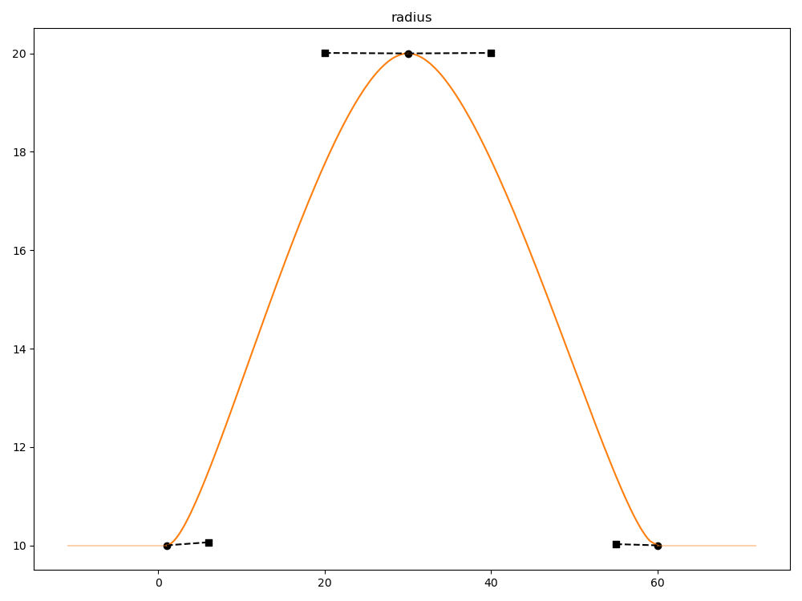
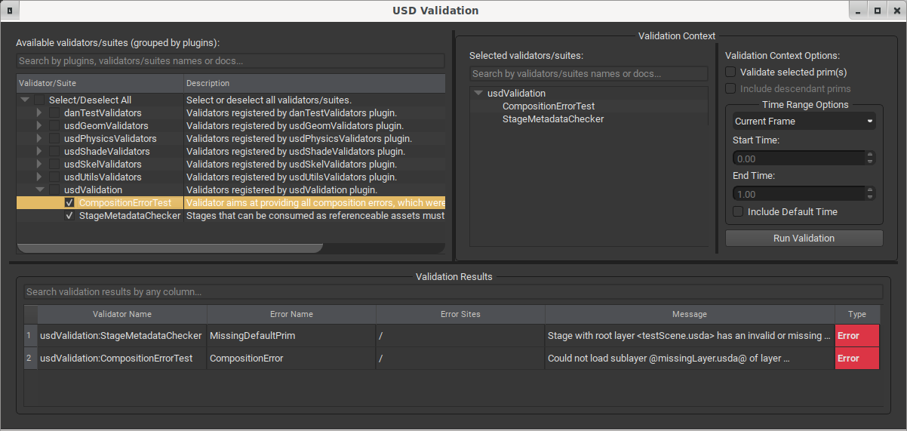

术语相邻入口双语覆盖Terminology adjacent-entry bilingual overlay
本页是 release 首页的术语入口。当前优先建立中英术语对照、目录导航和核心概念速览，官方英文定义与链接结构保持原样。
This page is the terminology entry from the release home page. It prioritizes Chinese-English term mapping, contents navigation, and a core concept quick map while preserving the official English definitions and link structure.
核心术语速览Core Term Quick Map
本页把 glossary 做成术语对照入口：保留官方英文定义全文，并为目录、标题、高频核心概念和 92 个高频定义小节增加中文解释层。完整定义逐条翻译将在后续小批量迭代中继续补齐。
This page turns the glossary into a bilingual terminology entry point: official English definitions are retained, and Chinese labels or briefs are added to the contents, headings, high-frequency concepts, and 92 selected high-frequency definition sections. Full definition-by-definition translation will continue in later focused passes.
由一个或多个 Layer 组合出的场景访问入口，通常是读取、遍历和编辑 USD 的主要对象。
Scene access object composed from one or more layers.
场景命名空间中的层级节点，是组织对象、属性和关系的基本单位。
Hierarchical scene namespace object.
保存场景描述意见的文件或数据容器，可参与组合形成最终场景。
Container of authored scene description opinions.
把多个 Layer、引用、Payload、Variant 等意见解析成最终场景的过程。
Process that resolves authored opinions into the final scene.
连接不同场景描述位置的组合关系，如 References、Payload、Inherits、Specializes 和 Variants。
Relationships such as references, payloads, inherits, specializes, and variants.
把外部或同文件中的资产内容引入当前 prim 的组合弧。
Composition arc that brings referenced scene description into a prim.
可按需加载的引用式组合弧，用于大场景的延迟加载和规模控制。
Loadable composition arc for scalable deferred loading.
Variant 是一个命名变体，通常由 VariantSet 承载和选择。
A single named variation selected through a VariantSet.
承载一组变体并决定选中变体的组合机制。
Composition mechanism that holds and selects variants.
Prim 上承载有类型数据的 Property，可包含默认值或 timeSamples。
Typed data-bearing property on a prim.
Prim 上指向其他对象或属性的 Property，用于表达连接和依赖。
Property that targets other objects or properties.
描述对象行为或附加信息的键值数据，参与组合和值解析。
Key-value data describing behavior or extra information.
在组合结果中为属性或元数据求得最终值的规则和过程。
Rules used to compute final property or metadata values.
定义某类 prim、属性、API 或行为的类型系统约定。
Type-system contract for prims, properties, APIs, or behavior.
几何 prim 上用于携带可插值、可索引用户数据的属性族。
Interpolated or indexed user data on geometric prims.
USD 的时间坐标单位，用于访问随时间变化的值。
USD time coordinate for time-varying values.
属性在某个时间坐标上直接编写的取值。
Authored value for an attribute at a time coordinate.
UsdGeomImageable 的内建属性，用于控制对象是否可见或可渲染。
Builtin imageable attribute controlling visibility.
USD 术语和概念USD Terms and Concepts
USD introduces quite a few terms and concepts, some of which, unavoidably, already have different meanings in other contexts, so it can be quite daunting to make sense of all of our documentation and code until you have become fully indoctrinated. This document attempts to define and explain all the major concepts and behaviors referred to in other parts of the USD documentation.
激活 / 非激活Active / Inactive
中文解释：Active 表示 prim 会参与 Stage 组合、遍历和常规使用；Inactive 表示该 prim 及其命名空间子树在组合结果中被停用，常用于临时裁剪场景内容。
English guide: Active prims participate in the composed stage. Inactive prims and their namespace descendants are excluded from normal composition and traversal.
Activation is a metadatum/behavior of prims that models a “non destructive and reversible prim deletion” from a stage . Prims are active by default, which means they and their active children will be composed and visited by stage traversals. However, by making a prim inactive by calling UsdPrim::SetActive(false), we prevent the prim itself from being visited by default traversals, and we also prevent the prim’s descendant prims from even being composed on the stage, which makes deactivation a useful tool for pruning unneeded scene description for scalability and complexity management.
In the following example, the prim at path /Parent has been deactivated, so /Parent/Child1 and other descendants will not be composed. However, /Parent’s active metadatum can be overridden to true in a stronger layer, which would cause /Parent/Child1 and etc. to compose onto the stage.
def Xform "Parent" (
active = false
)
{
def Mesh "Child1"
{
}
# other siblings of "Child1" ...
}
动画值Animated Value
中文解释：Animated Value 是通过 timeSamples 或 spline 等时间相关意见表达的属性值；查询时会结合 TimeCode、默认值和插值规则求得结果。
English guide: An Animated Value is expressed through time-related opinions such as time samples or splines and is resolved for a requested TimeCode.
An animated value is an 属性Attribute value that varies over time. Instead of (or in addition to) a single default value, you can author an animated value using TimeSamples or Spline data. The value for the attribute at a specific timecode will be determined based on the authored animated value, using interpolation if necessary.
The following example defines a Sphere with an animated value for radius that uses timeSamples.
def Sphere "SphereWithTimeSamples"
{
double radius.timeSamples = {
1: 100,
20: 500,
50: 250
}
}
Similarly, the following example defines a Sphere with an animated value for radius using a spline.
def Sphere "SphereWithSpline"
{
double radius.spline = {
bezier,
1: 10; pre (0, 0); post curve (5, 0.0125),
30: 20; pre (10, -0.001); post curve (10, 0.001),
60: 10; pre (5, -0.005); post curve (0, 0),
}
}
As described in 属性Attribute, an attribute may have both a default value and an animated value authored. It is also possible to have a default value, timeSamples, and spline data authored on the same attribute at the same spec level, however only one value source will be used for evaluation, as described in 值解析Value Resolution.
动画阻断Animation Block
中文解释：Animation Block 是在某个较强意见中阻断较弱 timeSamples 的机制，用来明确表示这里不继承下层动画采样。
English guide: An Animation Block blocks weaker time samples from contributing at that site, explicitly stopping inherited animation samples.
An animation block blocks any animated values for an attribute. This is similar to an attribute block but only blocks animated values (TimeSamples and Splines) and not default values. Use an animation block when you want to block animated values from weaker opinions in your scene, but you still want the default value from weaker layers to come through. For example, in a VFX pipeline you might have assets with animated values authored by one department that a different department needs to block, but the authored default values are still needed.
In the following example, “BigBallWithoutAnimation” blocks the animated value of radius referenced from “BigBall”, causing radius’s value to resolve to the default value (100) from “BigBall”.
def Sphere "BigBall"
{
double radius = 100
double radius.timeSamples = {
1: 100,
24: 500,
}
}
def "BigBallWithoutAnimation" (
references = </BigBall>
)
{
double radius = AnimationBlock
}
If an attribute block was used instead of the animation block in the above example, the default value from “BigBall” would also be blocked, and the value would resolve to the schema fallback value for radius.
Note
You can only use animation blocks to completely block an attribute’s animated value. You cannot use animation blocks on individual timeSamples or spline knots, unlike attribute blocks that support this functionality.
API SchemaAPI Schema
中文解释：API Schema 是可应用到 prim 上的行为或属性集合，用来给已有 typed schema 增加能力，而不改变该 prim 的基础类型名称。
English guide: An API Schema adds behavior or properties to a prim without replacing the prim's underlying typed schema.
An API schema is a prim SchemaSchema that serves as an interface or API for authoring and extracting a set of related data, and may also contribute to a prim’s definition. In terms of the USD object model, an API schema is one that derives from UsdAPISchemaBase, but not from its subclass UsdTyped. That means UsdPrim::IsA<UsdModelAPI>() will never return true. In contrast to typed, “is a” schemas, think of API schemas as “has a” schemas. There are three types of API schema: non-applied, single-apply, and multiple-apply.
Non-applied API Schemas
Non-applied API schemas are, in some sense, the “weakest” API schemas, since all they provide is API for setting and fetching some related properties and/or metadata, and do not contribute to a prim’s type or definition in any way. The UsdModelAPI is an example of a non-applied schema whose purpose is to interact with a few pieces of prim metadata related to models and assets; there is no way to tell whether a UsdModelAPI is present on a prim - instead one simply uses its methods to interrogate particular aspects.
Usd.ModelAPI(prim).SetKind(KindKind.Tokens.subcomponent)
One might also create a non-applied schema to interact with some related (for your purposes) properties that exist on some number of other typed schemas, which may allow for more concise coding patterns.
Single and Multiple Apply Schemas
Applied schemas get recorded onto a prim in its apiSchemas metadata, which allows them to contribute to the prim’s definition, adding builtin properties, and submitting to presence queries, using UsdPrim::HasAPI<UsdShadeMaterialBindingAPI>(). The most common type of API schema is single-apply, which should be applied before using the schema’s authoring APIs. That is, whereas when we are authoring typed schemas we usually assign the type as we define the prim, before using the schema to author data, like:
mesh = UsdGeom.Mesh.Define(stage, path) mesh.CreateSubdivisionSchemeAttr().Set(UsdGeom.Tokens.bilinear)
for applied API schemas we instead apply the type to an existing prim before using the schema to author data, like:
bindingAPI = UsdShade.MaterialBindingAPI.Apply(prim) bindingAPI.Bind(materialPrim)
Multiple-apply schemas can be applied to a prim more than once, requiring an “instance name” to distinguish one application from another - the instance name will form part of the namespace in which the schema’s properties will be authored. UsdCollectionAPI is an example of a multiple-apply schema, which UsdShadeMaterialBindingAPI uses to assign materials to collections of prims, allowing multiple collections to be located on a single prim.
Choose to create an applied API Schema when you have a group of related properties, metadata, and possibly associated behaviors that may need to be applied to multiple different types of prims . For example, if your pipeline has a set of three attributes that get authored onto every gprim, and you want to have a robust schema for authoring and extracting those attributes, you could create an applied API schema for them. Why not instead subclass the typed UsdGeomGprim schema and add the attributes there? Because you would then need to redefine all of the schema classes that derive from Gprim, thus preventing you from taking advantage of built-in DCC support for the UsdGeomGprim-derived classes. API schemas provide for “mix in” data organization.
API schemas can be generated using the USD schema generation tools, and extended with custom methods, just as typed schemas can. We use schema generation even for non-applied API schemas that have no builtin properties, to ensure consistency.
装配Assembly
中文解释：Assembly 是一种较高层级的 model kind，通常表示由多个 component 或 group 组成的可发布资产集合。
English guide: An Assembly is a higher-level model kind, commonly representing a publishable collection made from components or groups.
In USD an assembly is a kind of 模型Model. Assemblies are group models, i.e. models that aggregate other models into meaningful collections. An assembly may consist primarily of references to other models, and themselves be published assets.
def Xform "Forest_set" (
kind = "assembly"
)
{
# Possibly deep namespace hierarchy of prims, with references to other assets
}
See also: model hierarchy
资产Asset
中文解释：Asset 通常指可以被引用、解析、打包或发布的一组 USD 场景描述及其依赖资源；在工作流中它更像可复用交付单元，而不只是单个文件。
English guide: An Asset is a reusable unit of USD scene description and dependencies that can be resolved, referenced, packaged, or published.
资产Asset is a fairly common organizational concept in content-producing pipelines. In the most generic terms in USD, an asset is something that can be identified and located (via asset resolution) with a string identifier. To facilitate operations such as asset dependency analysis, USD defines a specialized string type, asset, so that all metadata and attributes that refer to assets can be quickly and robustly identified. In content pipelines, assets are sometimes a single file (e.g. a UV texture), or a collection of files anchored by a single file that in turn references others. A non-defining, but important quality of assets is that they are generally published and version-controlled. As an aid to asset management and analysis of composed scenes, USD provides an 资产信息AssetInfo schema. The text .usda format uses a special syntax for asset-valued strings to make them easily differentiable from ordinary strings, using the “@” symbol instead of quotes to delimit their values, or “@@@” as delimiter if the asset path itself contains the “@” character. If an asset path must contain the string “@@@” then it should be singly escaped, as “\@@@”. See 资产信息AssetInfo for examples of both forms.
资产信息AssetInfo
中文解释：AssetInfo 是一组资产相关 metadata，用来记录 identifier、name、version 等可被工具用于资产识别和发布追踪的信息。
English guide: AssetInfo is asset-related metadata used by tools to identify, publish, and track assets.
资产信息AssetInfo is a metadata dictionary that can be applied to any UsdPrim or UsdProperty to convey asset-identification-and-management-related information. Typically a UsdStage pulls in many assets through composition arcs. When interacting with prims and properties on the stage, however, the presence and location of the arcs and the identity of the assets they target is, by design, fairly deeply hidden as an implementation detail. We do provide low-level tools for examining the arc-by-arc index for each prim, but it can be difficult to reconstruct intent and asset identity from the arc structure alone. 资产信息AssetInfo provides a mechanism for identifying and locating assets that survives composition (and even stage flattening) to allow clients to discover the namespace location at which an asset is introduced, and generally how to construct a reference to the asset.
Note
assetInfo authored in USD files is advisory data one supplies for client applications to use. It is not consulted or consumed by the USD core in any way during Stage loading/composition.
The AssetInfo dictionary can contain any fields a client or pipeline finds useful, but promotes four core fields, which each have direct API:
identifier (asset)
Provides the asset identifier one would use to target the asset with a composition arc.
name (string)
Provides the name of the asset as it would be identified, for example, in an asset database query.
payloadAssetDependencies (asset[])
Provides what can be a substantial optimization for dynamic asset dependency analysis. If your asset build/publish process can pre-compute, at publish-time, the external asset dependencies contained inside the asset’s payload(s), then shot/render-time dependency analysis (for asset isolation) need not load the payload.
version (string)
Provides the version of the asset that was/would-be targeted. In some pipelines, it may make sense to inject an asset’s revision control version into the published asset itself. In other pipelines, version is tracked in an external database, so the version assetInfo must be added in the referencing context when we add a reference to an asset.
A continuation of the example above that illustrates assemblies:
def Xform "Forest_set" (
assetInfo = {
asset identifier = @Forest_set/usd/Forest_set.usd@
string name = "Forest_set"
}
kind = "assembly"
)
{
# Example of an asset that embeds the '@', and so must be delimited
# with the "@@@" form
asset primvars:texture = @@@body_decal.exr@v3@@@
}
资产解析Asset Resolution
中文解释：Asset Resolution 是把资产路径解析为可读取资源的机制，通常由 Ar resolver 结合当前上下文、搜索规则或自定义解析器完成。
English guide: Asset Resolution maps asset paths to readable resources, usually through Ar resolver behavior and the active resolution context.
Asset resolution is the process by which an asset path is translated into the location of a consumable resource. USD provides a plugin point for asset resolution, the ArResolver interface, which clients can implement to resolve assets discovered in a USD scene, using whatever logic and external inputs they require. This plugin also lets clients provide USD with an asset’s data without fetching the data to disk.
If no asset resolver plugin is available, USD falls back to a default resolver implementation that uses search paths to locate assets referenced via relative paths. See the examples for 引用References.
属性Attribute
中文解释：Attribute 是 prim 上保存有类型值的 Property，可有默认值、timeSamples、连接或值阻断；多数几何、材质和动画数据都通过 Attribute 表达。
English guide: An Attribute is a typed value-bearing property on a prim. It may hold defaults, time samples, connections, or value blocks.
Attributes are the most common type of property authored in most USD scenes. An attribute can take on exactly one of the legal attribute typeNames USD provides, and can take on both a default value and an animated value. Resolving an attribute at any given timeCode will yield either a single value or no value. Attributes resolve according to “strongest wins” rules, so all values for any given attribute will be fetched from the strongest PrimSpecPrimSpec that provides either a default value or an animated value. Note that this simple rule is somewhat more complicated in the presence of authored value clips. One interacts with attributes through the UsdAttribute API.
A simple example of an attribute that has both an authored default and an animated value (using two timeSamples) in the same primSpec:
def Sphere "BigBall"
{
double radius = 100
double radius.timeSamples = {
1: 100,
24: 500,
}
}
属性阻断Attribute Block
中文解释：Attribute Block 是在较强意见中阻断较弱属性值的 authoring 方式，可用于明确清除默认值、动画值或连接带来的贡献。
English guide: An Attribute Block authors a stronger opinion that blocks weaker attribute values, defaults, animation, or connections.
Similarly to how prims can be deactivated through composing overriding opinions, the value that an attribute produces can be blocked by an overriding opinion of None, which can be authored using UsdAttribute::Block(). A block itself can, of course be overridden by an even stronger opinion. The following example extends the previous attribute example, adding a DefaultBall prim that blocks the value of radius it references from BigBall, causing radius’s value to resolve back to its fallback at UsdTimeCode t (any blocked attribute that has no fallback will report that it has no value when we invoke UsdAttribute::Get()):
def Sphere "BigBall"
{
double radius = 100
double radius.timeSamples = {
1: 100,
24: 500,
}
}
def "DefaultBall" (
references = </BigBall>
)
{
double radius = None
}
In addition to completely blocking an attribute’s value, sub time-ranges can be separately blocked, by blocking individual timeSamples. Consider the following examples:
Example 1:
def Sphere "BigBall"
{
double radius.timeSamples = {
101: 12,
102: None,
}
}
For the attribute radius on BigBall:
Usd.Attribute.Get(t) will return 12 for Usd.TimeCode t in (-∞, 102).
Usd.Attribute.Get(t) will return None for Usd.TimeCode t in [102, ∞).
Example 2:
def Sphere "BigBall"
{
double radius.timeSamples = {
101: None,
102: 12,
}
}
For the attribute radius on BigBall:
Usd.Attribute.Get(t) will return None for Usd.TimeCode t in (-∞, 102).
Usd.Attribute.Get(t) will return 12 for Usd.TimeCode t in [102, ∞).
Note that the per-timeSample-blocking ability does not allow us to sparsely override timeSamples, i.e. in the following example:
def Sphere "BigBall"
{
double radius.timeSamples = {
101: 1,
102: 2,
}
}
def "DefaultBall" (
references = </BigBall>
)
{
double radius.timeSamples = {
101: None,
}
}
For the attribute radius on DefaultBall:
Usd.Attribute.Get(t) will return None for Usd.TimeCode t in (-∞, ∞).
Attribute blocks can also be used to block segments of a 样条Spline, similar to blocking individual timeSamples. In the following example, we start blocking from the knot at timecode 30 (note the “none” interpolation mode) to the knot at timecode 60.
def Sphere "Sphere"
{
double radius.spline = {
bezier,
1: 10; pre (0, 0); post curve (5, 0.0125),
20: 20; pre (0, 0); post curve (0, 0),
30: 0; pre (0, 0); post none,
60: 10; post curve (0, 0),
}
}
Usd.Attribute.Get(t) will return None for Usd.TimeCode t in [30, 60)
Note that setting an empty spline (with no knots) for an attribute will result in the attribute being completely blocked.
OpenUSD also provides a way to just block animated data (timesamples and splines) but not default values for an attribute, using an 动画阻断Animation Block.
属性连接Attribute Connection
中文解释：Attribute Connection 是让一个 attribute 指向另一个属性或数据源的连接关系，常用于材质网络、计算图或需要延迟求值的数据流。
English guide: An Attribute Connection lets an attribute point to another property or data source, often for shading networks, computation graphs, or deferred data flow.
See 连接Connection.
属性可变性Attribute Variability
中文解释：Attribute Variability 描述属性值是否随时间变化，帮助工具理解该属性更像 uniform 静态数据还是 varying 动态数据。
English guide: Attribute Variability describes whether an attribute value can vary over time, helping tools distinguish static uniform data from varying data.
See 可变性Variability.
变更处理Change Processing
中文解释：Change Processing 是 USD 或 Hydra 对场景输入变化作出增量响应的机制，避免每次编辑都重新构建完整场景状态。
English guide: Change Processing incrementally responds to authored or time-varying scene changes instead of rebuilding the full scene state.
Change processing is the action a UsdStage takes in response to edits of any of the layers that contribute to its composition. During change processing, prims on the stage may be re-indexed or disappear entirely, or new prims may come into being. The key things to understand about change processing are:
It is always active. Whenever you use the Usd or Sdf APIs to mutate any layers that contribute to a UsdStage’s composition, that stage will update itself immediately, in the same thread in which authoring was performed (though the change-processing itself may spawn worker threads), so that it always presents an accurate result to clients.
When a stage has completed a round of change processing, it will send notification to clients who have registered interest, so that they may keep themselves updated in light of authored changes to the stage.
Note
Clients listening to UsdStage notifications should not update themselves immediately upon receiving a notice, but instead note what has become out-of-date (dirty), and defer updating until necessary; this helps minimize the amount of work an application needs to undertake when many edits are being performed rapidly.
For all of the layers that contribute to a given UsdStage, only one thread at a time may be editing any of those layers, and no other thread can be reading from the stage while the editing and change processing are taking place. This is because we do not want to weigh down read access to UsdStage data with any kind of locking.
ClassClass
中文解释：Class 是一种 specifier，常用于保存可被 inherit 或 specialize 的共享意见；它表达编辑模板意图，而不是普通可遍历实例对象。
English guide: Class is a specifier often used to hold shared opinions for inherits or specializes, expressing template intent rather than a normal traversable object.
ClassClass is one of the three possible specifiers a prim (and also a primSpec) can possess. A class prim and all of the prims nested inside it in namespace will report that they are abstract, via UsdPrim::IsAbstract, which causes the prims to be skipped by stage and child traversals, unless a client specifically asks to include abstract prims. The most common use of classes is to create prims from which other prims can inherit. Classes can define/override metadata as well as properties and nested prims. The following example contains a class _class_Ball that provides a value for the radius attribute for any prim that would inherit or reference it. The _class_ prefix is a Pixar convention for naming classes, and is not a requirement.
class "_class_Ball" {
double radius = 50
}
片段Clips
中文解释：Clips 是把时间采样数据拆分到外部文件序列并在 Stage 中按元数据聚合的机制，适合大规模动画或仿真缓存。
English guide: Clips store time-sampled data across external file sequences and aggregate them through metadata, which is useful for large animation or simulation caches.
See 值片段Value Clips
集合Collection
中文解释：Collection 是表达一组 prim 或路径成员的机制，可用于材质绑定、灯光链接、渲染过滤和批量操作。
English guide: A Collection represents a set of prims or path members and is used for material binding, light linking, render filtering, and batch operations.
Collections build on the ability of relationships to identify objects in a USD scene. Whereas a relationship is (resolves to, by fetching its Targets) simply an ordered list of paths identifying other objects in the scene, a Collection uses a pair of relationships and extra rules to compactly encode potentially large sets of objects by identifying a set of paths to hierarchically include in the Collection, and a separate set of paths to hierarchically exclude. For example, the following Collection identifies all of the prims comprising the two buildings, except for all the prims organized under the Floor13 prim in each.
over "World"
{
over "Buildings" (
prepend apiSchemas = "CollectionAPI:luckyBuildings"
)
{
uniform token collection:luckyBuildings:expansionRule = "expandPrims"
rel collection:luckyBuildings:includes = [
</World/Buildings/Skyscraper>,
</World/Buildings/Pyramid>,
]
rel collection:luckyBuildings:excludes = [
</World/Buildings/Skyscraper/Floor13>,
</World/Buildings/Pyramid/Floor13>,
]
}
}
We can see from the example that Collections in USD are expressed as “multiple apply” API Schemas, so that we can add as many different collections as we want, to any prim already in the scene. The expansionRule attribute specifies how the targets of the includes relationship should be expanded; we can include all prims, all prims and properties, or just the targeted objects themselves. In addition to prims and properties, a Collection can include another Collection, which allows us to hide internal details of assets when we publish them, as the aggregate scenes that consume the assets can do things like binding materials and illuminating the scene by targeting the asset’s collections (which break down the asset into meaningful groups) with other collections.
We create and query Collections using UsdCollectionAPI.
For more details on Collections, including pattern-based collections that use a path expression to determine collection membership, see Collections and Patterns.`
组件Component
中文解释：Component 是 model kind 中常见的叶级资产单元，通常表示可独立发布、引用和实例化的具体对象。
English guide: A Component is a common leaf-level model kind for an independently publishable, referenceable, or instanceable asset unit.
A component is a “leaf” kind of 模型Model. Components can contain subcomponents, but no other models. Components can reference in other assets that are published as models, but they should override the kind of the referenced prim to “subcomponent”.
def Xform "TreeSpruce" (
kind = "component"
)
{
# Geometry and shading prims that define a Spruce tree...
def "Cone_1" (
kind = "subcomponent"
references = @Cones/PineConeA.usd@
)
{
}
}
See also: model hierarchy
组合Composition
中文解释：Composition 是把 Layer、Reference、Payload、Variant、Inherits 等多处意见按强度规则合成为最终 Stage 的过程。
English guide: Composition combines opinions from layers and arcs such as references, payloads, variants, and inherits into the final stage.
组合Composition is the process that assembles multiple layers together by the composition arcs that relate them to each other, resulting in a UsdStage scenegraph of UsdPrims. Each UsdPrim contains an index that allows clients to subsequently extract “resolved values” for properties and metadata from the relevant layers. Composition occurs when first opening a UsdStage, when loading or unloading prims on the stage, and when layers that contribute to the stage are edited. One of the results of composition is path translation so that all the data in all layers contributing to the scene are accessed by their “scene level” namespace locations (paths).
We also sometimes refer to “a composition” or “a composed prim” or “a composed scene”, in which contexts we are referring to the result of performing composition.
组合弧Composition Arcs
中文解释：Composition Arcs 是跨位置引入或组织场景描述的关系类型，例如 References、Payloads、Inherits、Specializes 和 Variant selections。
English guide: Composition Arcs are relationships that bring scene description from other locations, including references, payloads, inherits, specializes, and variants.
Composition arcs are the “operators” that allow USD to create rich compositions of many layers containing mixes of “base” scene description and overrides. The arcs are:
We refer to these operators as arcs because each one targets either a layer, a prim, or a combination of layer and prim, and when diagramming a prim’s index to understand how a scene or value is composed, the composition operators represent the directional arcs that combine layers and primSpecs into an ordered graph that we traverse when performing value resolution. Except for subLayers, all composition arcs target a specific prim in a LayerStack, and allow the renaming of that target prim as the result “flows” across the arc. USD performs all the necessary path translation to ensure that stage-level queries always work in the stage-level namespace, regardless of how many different and/or nested composition arcs and name-changes contributed to the result.
Except for subLayers, all composition arcs are list editable, which means that each layer in a layerStack can sparsely prepend, append, remove, or reset targets, which allows us to non-destructively edit the composition structure of a scene as it evolves or passes through multiple stages of a pipeline. Following is an example of list-edited references. The resolved value of references on /MyPrim that will be consumed during composition of superLayer.usd is a two-element list: [ @file1.usd@, @file3.usd@ ]
#usda 1.0
def "MyPrim" (
references = [
@file1.usd@,
@file2.usd@
]
)
{
}
#usda 1.0
(
subLayers = [
@./base.usd@
]
)
# Removes reference to file2.usd, while adding a reference to file3.usd at the end of the list
over "MyPrim" (
delete references = [ @file2.usd@ ]
append references = [ @file3.usd@ ]
)
{
}
计算输入参数Computation Input Parameters
中文解释：Computation Input Parameters 是驱动计算或生成结果的输入数据；在 USD 语境中常用于说明计算属性依赖哪些 authored values 或上下文。
English guide: Computation Input Parameters are inputs that drive computed results, often describing which authored values or context a computation depends on.
An OpenExecOpenExec computation input parameter is a specification of an input data source for a computation. Input parameters are used by computations to ingest source data from resolved attribute values or output values from other computations.
Input parameters can source values from the outputs of other computations, and sourced computations need not be published on the same scene object as the consuming computation. OpenExec may need to, for example, traverse a relationship, or look up or down the namespace hierarchy, to properly resolve the source for the input parameter. Input parameters encode information used to resolve input sources, such as a computation name, the scene object used to look up the computation by name, and the input value data type, which must match the data type of the output value returned from the source computation or resolved attribute value.
Every input parameter provides zero or more input values to the computation callback. A relationship-targeted input may not resolve to any source computations if the specified relationship does not have authored targets, or if the targeted objects do not publish a computation with the specified name or result type. Conversely, the input parameter can resolve to more than one source computation if there are multiple authored targets.
See 计算输入参数Computation Input Parameters for more information on computation input parameters.
计算Computation
中文解释：Computation 指由输入参数和上下文推导结果的过程；USD 文档中常用它区分直接 authored value 与运行时或工具侧求得的值。
English guide: Computation is the process of deriving a result from input parameters and context, distinct from a directly authored value.
An OpenExecOpenExec computation is a function, provided by a scene object, that computes one or more output values from a set of input values.
A computation will take zero or more input parameters (typically at least one), and a C++ computation callback responsible for reading input values, performing the computational work, and outputting the result values (typically one). A computation instance is also associated with a computation provider, a scene object used as an anchor for sourcing input values.
Computations can be Built-in computations (provided by USD schemas) or Plugin computations (custom computations registered as part of the schema registration process)
See Computations for more information on computations.
连接Connection
中文解释：Connection 是属性之间的数据依赖或目标关系，常见于 shading network 和计算图，用来表达一个属性从另一个属性取值。
English guide: A Connection represents a data dependency or target relationship between properties, common in shading networks and computation graphs.
Connections are quite similar to relationships in that they are list-edited “scene pointers” that robustly identify other scene objects. The key difference is that while relationships are typeless, independent properties, connections are instead a sub-aspect of USD attributes. Relationships serve to establish dependencies between prims as a whole, or the dependency of a prim as a whole upon a targeted property. But they lack the expressiveness to encode, for example, complex, typed, dataflow networks such as shading networks. In networks in which each node has multiple, value-typed inputs and/or outputs, we can represent the nodes as prims, and the inputs and outputs as attributes. Each attribute is strongly typed, and connections allow each input to target an output attribute from which, in some downstream consuming application, it may receive dataflow.
Connections empower USD to robustly encode dataflow networks of prims, but USD itself provides no dataflow behavior across connections. Instead, USD stipulates that schemas can impose semantics on connections, to be interpreted/implemented by the schema or higher-level systems. We do so for two reasons:
Consulting connections during value resolution (UsdAttribute::Get()) would necessarily slow down all attribute value resolution, whether the attribute possesses connections or not.
Interchange is an important aspect of USD, and we are not currently willing to tackle the conformance problem of different dataflow semantics between different DCCs.
A basic example of connections, from the Simple Shading in USD tutorial, which demonstrates how USD’s shading model uses input-to-output connections to indicated render-time dataflow between shaders, and output-to-output connections on Materials to bind shader outputs to important computed results consumed by the renderer:
def Material "boardMat"
{
token inputs:frame:stPrimvarName = "st"
token outputs:surface.connect = </TexModel/boardMat/PBRShader.outputs:surface>
def Shader "PBRShader"
{
uniform token info:id = "UsdPreviewSurface"
color3f inputs:diffuseColor.connect = </TexModel/boardMat/diffuseTexture.outputs:rgb>
float inputs:metallic = 0
float inputs:roughness = 0.4
token outputs:surface
}
def Shader "stReader"
{
uniform token info:id = "UsdPrimvarReader_float2"
token inputs:varname.connect = </TexModel/boardMat.inputs:frame:stPrimvarName>
float2 outputs:result
}
def Shader "diffuseTexture"
{
uniform token info:id = "UsdUVTexture"
asset inputs:file = @USDLogoLrg.png@
float2 inputs:st.connect = </TexModel/boardMat/stReader.outputs:result>
float3 outputs:rgb
}
}
Crate 文件格式Crate File Format
中文解释：Crate File Format 是二进制 USD 文件格式，通常使用 `.usd` 扩展名，面向快速读取、紧凑存储和大规模场景交换。
English guide: Crate File Format is the binary USD file format, commonly stored as `.usd`, designed for compact storage and efficient reading.
The crate file format is USD’s own binary file format, whose file extension is .usdc, and which is losslessly, bidirectionally convertible to the .usda text format. The .usd file format is special, as files with that extension can be either crate or text files; this facilitates debugging as crate files can be converted to text in-place for rapid iterative hand-editing without needing to change any referencing layers. The primary differences between text and crate files (other than the obvious human readability aspect) are:
Text files must be read in their entirety, parsed, and stored in-memory as soon as they are opened, whereas crate files read in only a small index of the file’s contents when they are opened, deferring access to big data until a client requests it specifically.
Except for very small files (under a few hundred kilobytes), crate files will be much more compact than text files.
Crate was designed for low-latency and high-performance lazy queries, and we believe it to be the best file format choice for storing scene description consumed by USD. Some of its features include:
Aggressive, multi-level data deduplication yields small file sizes
Lockless data extraction for high-bandwidth multi-threaded reading
Access to files either by mmap() or pread(), trading VM pressure for file descriptor consumption and system call overhead. By default crate uses mmap(), but the choice is configurable at runtime.
Low latency in “cold file-system cache” network access, as all data needed to open a crate file for USD’s use is compacted into a contiguous footer section.
Editing crate files does not copy all data to a new file. Instead, it appends. Disused values consume disk space, so repeated editing may produce files larger than ideal. Use usdcat to rewrite files in their most compact form.
DefDef
中文解释：Def 是一种 specifier，表示该 prim 在当前层中被定义为实际场景对象，通常会参与 Stage 的默认遍历和组合结果。
English guide: Def is a specifier that defines a prim as an actual scene object in the current layer.
DefDef is one of the three possible specifiers a prim (and also a primSpec) can possess. A def defines a prim, which, for most consumers of USD, equates to the prim being present on the stage and available for processing. Prims whose specifier resolves to class or over are actually present and composed on a stage, but will not be visited by UsdPrim::GetChildren or UsdStage::Traverse. A def may, but need not declare a schema type for the prim. For further information see the FAQ: What’s the difference between an “over” and a “typeless def” ?
The following example defines a prim /Ball as belonging to the Sphere schema, and sets its radius to 50.
def Sphere "Ball" {
double radius = 50
}
默认值Default Value
中文解释：Default Value 是属性在没有查询到对应 timeSample 时使用的基础值，也是非动画属性最常见的取值位置。
English guide: A Default Value is the base attribute value used when no matching time sample is queried.
Many assets consist entirely of a static (with respect to time) definition, which really exists “outside time”. When encoding such assets in a format that only allows animated values associated with time coordinates, one must choose a “sentinel” time coordinate at which to record static data, and hope that no other application uses that sentinel time for any other purpose. This can be fragile, and also lead to the “static” definition becoming overshadowed and not easily accessible when overridden in a stronger layer.
USD addresses this problem by providing a completely separate field for each attribute, called its default. This field can be authored and resolved in isolation of any authored animated value anywhere in an attribute’s index, by using the universal, reserved sentinel UsdTimeCode::Default() as the (implicit or explicit) time coordinate to UsdAttribute::Get() and UsdAttribute::Set(). When resolving an attribute’s value at a non-Default time, defaults still participate, but within a given primSpec, an authored default is always weaker than an authored animated value. However, an authored default in a stronger layer/primSpec is stronger than an animated value authored in a weaker layer. In text USD layers, the default value is the single value that can be assigned directly to an attribute in the attribute declaration line:
over "Ball" {
double radius = 50
}
直接意见Direct Opinion
中文解释：Direct Opinion 是直接写在某个 spec 或 property 上的意见，与通过继承、引用或其他组合弧间接带来的意见相对。
English guide: A Direct Opinion is authored directly on a spec or property, rather than arriving through another composition arc.
A direct opinion for some property or metadatum of a prim at path /foo/bar/baz in a layerStack is one that is authored “directly” on the primSpec at /foo/bar/baz in contrast to an indirect opinion on a different primSpec that affects /foo/bar/baz due to the effect of one or more composition arcs. Two examples of where we find it useful to talk about direct vs. indirect opinions are:
A direct reference is one authored on a prim itself, as opposed to an ancestral reference , authored on some ancestor of the prim. Ancestral references are weaker than direct references, so if the targets of both the direct and ancestral references contain opinions about the same property on the prim, the opinions of the direct reference will win. This “weaker ancestor” behavior is also true for direct vs ancestral Payloads, VariantSets, 继承Inherits, and 特化Specializes arcs.
When prim /root/derived specializes prim /root/base in a layer, direct opinions authored on the “derived” prim in any referencing context (that is, a layerStack that references the /root prim in the original layer, or any layerStack that references the new layerStack, ad infinitum) will always be stronger than any opinions expressed directly on the “base” prim in any of the referencing contexts. See specializes for examples.
编辑目标EditTarget
中文解释：EditTarget 指定对组合 Stage 进行 authoring 时意见应写入哪一个实际层或组合节点，是把编辑意图落到正确源位置的关键上下文。
English guide: An EditTarget specifies where authored opinions should be written when editing a composed stage.
When authoring composed scene description, it is often desirable to edit the targets of various composition arcs in context of the scene you are constructing, rather than needing to edit individual layers in isolation. Edit Targets, embodied by the UsdEditTarget class, allow you to work with the composed stage and the UsdPrims it contains, while specifying which contributing site in the stage’s network of composition arcs should receive the opinions you are about to author using the composed prim. You can think of Edit Targets as an extension of the idea of “selecting a layer” in Photoshop. UsdEditTarget provides specific methods for selecting any sublayer in a stage’s root layerStack, or the currently selected variant of any defined top-level or nested variantSet. In addition, You can create an EditTarget from any “Node” in a prim’s PrimIndex, which allows you to target inherited classes, reference targets, etc.
回退值Fallback
中文解释：Fallback 是 schema 或 API 在没有作者意见时提供的默认行为或默认值，用于保证对象有可预测的基础语义。
English guide: A Fallback is schema- or API-provided behavior or value used when no authored opinion is present.
Many IsA Schemas and applied API Schemas define attributes that have an identifiable value that makes sense in most situations. The USD schema generation process allows a schema creator to specify such values as a fallback that will be implicitly present on an attribute even when no values have been authored for it. The presence of fallback values allows us to keep our scene description sparse and compact, and allows for self-documenting behavior. Fallbacks are deployed extensively in the UsdGeom schemas, for example UsdGeomImageable’s visibility attribute has a fallback value of inherited, and UsdGeomGprim’s orientation attribute has a fallback of rightHanded.
扁平化Flatten
中文解释：Flatten 是把组合后的结果写成更直接的场景描述，通常会烘焙组合弧效果，便于交换、调试或生成独立交付文件。
English guide: Flatten writes composed results into more direct scene description, usually baking composition effects for interchange, debugging, or standalone delivery.
Even though USD derives great efficiencies from accessing data directly from the layers that a stage composes together as directed by the various composition arcs that weave the files together, it can sometimes be useful to “bake down the composition” into a single layer that no longer contains any composition arcs. A flattened stage is highly portable since its single layer is self-contained, and in some cases, it may be more efficient to compose and resolve, although this is definitely not a given. For example, flattening a stage to an text USD layer will generally produce extremely large files since assets that were referenced multiple times on a stage will be uniquely baked out into their own namespaces, with all data duplicated; the crate file format will perform better in this metric, at least, since it performs data deduplication. Regardless of file format, the action of flattening a stage will generally be memory and compute-intensive, and will not, at this time, benefit from multithreading.
To flatten a stage, use UsdStage::Flatten or usdcat
with the --flatten option.
To flatten individual layer stacks, use
UsdUtilsFlattenLayerStack or usdcat with the
--flattenLayerStack option.
几何 PrimGprim
中文解释：Gprim 是几何 prim 的基础类别，承载可渲染几何常用属性，并与 UsdGeomImageable、Boundable 等 schema 语义相关。
English guide: A Gprim is a geometric prim category that carries common renderable geometry properties and related schema semantics.
几何 PrimGprim comes from Pixar’s RenderMan terminology, and is a contraction for “Geometric primitive”, which is to say, any primitive whose imaging/rendering will directly cause something to be drawn. Gprim is a first-class concept in USD, embodied in the class UsdGeomGprim. All Gprims possess the following qualities:
Gprims are boundable, and should always submit to computing an extent (even if it be an empty extent), and valid UsdGeom scene description should always provide an authored extent on a gprim that captures its changing shape (if its shape is animated).
Gprims are directly transformable , which is the primary distinguishing factor between UsdGeomGprim and Autodesk Maya’s similar “shape” node type. Transformable gprims necessitate fewer prims overall in most 3D compositions, which aids scalability, since prim-count is one of the primary scaling factors for USD.
Effectively structuring gprims in namespace
Please observe the following two rules when laying out gprims in a namespace hierarchy:
Do not nest gprims in namespace.
We consider it invalid to nest gprims under other gprims, and usdchecker will issue warnings on scenes that contain this construct. This is because key features of USD apply hierarchically and are “pruning”, such as activation and visibility. When an ancestor gprim is deactivated or made invisible, there is no possible way to make any descendant gprim active or visible.
Do not directly instance gprims.
Because the root-prims of instance prototypes possess no properties, it is pointless to instance a gprim directly. Renderers must not infer instanceability from an instance of a gprim prototype, because each instance is allowed to override any property defined originally on the referenced prototype root prim. One can use USD’s instancing feature to create gprim-level instancing, but to do so requires adding an Xform parent to the gprim in the prototype, and making the instances reference the parent, rather than the gprim, directly.
组Group
中文解释：Group 是一种 model kind，用来把多个模型组织成有语义的集合，常作为 assembly 内部的结构胶合层。
English guide: A Group is a model kind used to organize multiple models into a meaningful collection, often as structural grouping inside an assembly.
In USD a group is a kind of 模型Model. Groups are models that aggregate other models into meaningful collections. Whereas the specialized group-model kind assembly generally identifies group models that are published assets, groups tend to be simple “inlined” model prims defined inside and as part of assemblies. They are the “glue” that holds a model hierarchy together.
def Xform "Forest_set" (
kind = "assembly"
)
{
def Xform "Outskirts" (
kind = "group"
)
{
# More deeply nested groups, bottoming out at references to other assemblies and components
}
def Xform "Glade" (
kind = "group"
)
{
# More deeply nested groups, bottoming out at references to other assemblies and components
}
}
See also: model hierarchy
HydraHydra
中文解释：Hydra 是 USD 的渲染架构，面向大规模场景的数据同步、change processing 和多种渲染后端接入。
English guide: Hydra is USD's rendering architecture for large-scene data synchronization, change processing, and multiple render backends.
HydraHydra is a modern rendering architecture optimized for handling very large scenes and “change processing” (i.e. responding to authored or time-varying changes to the scene inputs). It has three major components: the scene delegates (which provide scene data), the render index (responsible for change tracking and other scene management), and the render delegates (which consume the scene data to produce an image). This flexible architecture allows for easy integration within pipelines that have their own scene data, as well as their own renderers. Pixar uses Hydra for asset preview in many of its tools, including usdview and the Presto Animation System.
If you’re interested in developing with Hydra components, see the Hydra Getting Started Guide and other Hydra developer documentation in our Developer Guides.
索引Index
中文解释：Index 是 USD/Pcp 用来描述 prim 组合来源和依赖结构的数据表示，支持 value resolution、primStack 调试和 EditTarget 构建。
English guide: An Index describes a prim's composition sources and dependency structure, supporting value resolution, primStack debugging, and edit targets.
An index, also referred to as a PrimIndex, is the result of composition, and the primary piece of information we compute and cache for a composed prim on a stage. A prim’s index contains an ordered (from strongest to weakest) list of “Nodes”, which are all of the locations in layers (also known as primSpecs) that contribute opinions to the data contained in the composed prim, as well as an indication of how each location was woven into the composite, i.e. what composition arc was traversed to discover it.
All of the queries on USD classes except for stage-level metadata rely on prim indices to perform value resolution. USD also uses prim indices to compute primStacks for debugging, and to construct Edit Targets.
继承Inherits
中文解释：Inherits 是一种组合弧，用于让 prim 继承 class 或其他源位置的意见，适合共享默认属性和批量覆盖。
English guide: Inherits is a composition arc that lets a prim inherit opinions from a class or source location, useful for shared defaults and broad overrides.
继承Inherits is a composition arc that addresses the problem of adding a single, non-destructive edit (override) that can affect a whole class of distinct objects on a stage. Inherits acts as a non-destructive “broadcast” operator that applies opinions authored on one prim to every other prim that inherits the “source” prim; not only do property opinions broadcast over inherits arcs - all scene description, hierarchically from the source, inherits. Consider the following example:
#usda 1.0
class Xform "_class_Tree"
{
def Mesh "Trunk"
{
color3f[] primvars:displayColor = [(.8, .8, .2)]
}
def Mesh "Leaves"
{
color3f[] primvars:displayColor = [(0, 1, 0)]
}
}
def "TreeA" (
inherits = </_class_Tree>
)
{
}
def "TreeB" (
inherits = </_class_Tree>
)
{
over "Leaves"
{
color3f[] primvars:displayColor = [(0.8, 1, 0)]
}
}
If you paste the example into a .usda file and view the composed result in usdview, you will see that /TreeA and /TreeB both inherit the child prims and properties nested inside /_class_Tree You can also observe an important property of inherits behavior in /TreeB/Leaves, which is that inherited opinions are weaker than direct opinions on prims that inherit the opinions. This allows us to always create exceptions to the broadcast behavior of inherits, in the same layerStack in which we are broadcasting inherited overrides.
The specifier for /_class_Tree is class. This is not a requirement. A prim can inherit from any prim that is neither a descendant nor ancestor of itself, regardless of the prim’s specifier or type. However, when inherits are used as a “broadcast edit” facilitator, we don’t typically expect the prims into which we deposit the edits to be processed directly when we (for example) render a scene - their purpose is to convey edits to other prims, and may not even contain a complete definition of any prim(s). Using a class specifier for these “edit holders” ensures that standard stage traversals will skip the prims, and generally conveys intent that the prim will be inherited by other prim(s).
A good way to understand inherits is to start by understanding references. In the above example, if you replace both “inherits = “ with “references = “ and view the composition, the results will be indistinguishable from each other! Within a layerStack (and ignoring any interaction with variantSets since VariantSets come between Inherits and References in LIVERPS) inherits are indistinguishable in effect from local references. The key difference between references and inherits is that references fully encapsulate their targets, and therefore “disappear” when composed through another layer of referencing, whereas the relationship between inheritors and their inherits target remains “live” through arbitrary levels of referencing. In other words, when a prim inherits from another prim, it subscribes itself and all referencing contexts to changes made to the inherited prim. You can see this difference with the following example that uses the previous example as Trees.usd:
#usda 1.0
# A new prim, of the same name as the original inherits target, providing new overrides
class "_class_Tree"
{
token size = "small"
# It's autumn in California
over "Leaves"
{
color3f[] primvars:displayColor = [(1.0, .1, .1)]
}
}
# TreeB_1 still inherits from _class_Tree because its referent does
def "TreeB_1" (
references = @./Trees.usd@</TreeB>
)
{
}
Viewing the flattened Forest.usd you can observe that /TreeB_1 has both all the structure inherited from /_class_Tree in Trees.usd, but also the size attribute it inherits from /_class_Tree in its own defining layer; as well, even though the referenced /TreeB had specified its own primvars:displayColor for its Leaves prim, the reddish color override in /class_Tree wins. Were you to change the inherits to references in Trees.usd, /TreeB_1 would not compose the size attribute and its Leaves would retain their original color, and the only way to broadcast changes to all instances of the original /_class_Tree in Forest.usd would be to destructively edit the Trees.usd file. There is a runtime cost to keeping inherits live, so you may want to avoid proactively adding inherits everywhere just in case you may want to “override all XXX”. Deploy inherits where they are likely to be useful; for example, at asset root-prims.
可实例化Instanceable
中文解释：Instanceable 是 prim 上的 metadata，用来声明该 prim 可参与实例化共享；它帮助 USD 决定是否构建共享 prototype。
English guide: Instanceable is prim metadata that declares whether a prim can participate in shared instancing and prototype construction.
可实例化Instanceable is a metadatum that declares whether a given prim should be considered as a candidate for instancing, and is authored via UsdPrim::SetInstanceable. If instanceable = true on a prim, then the prim will become an instance of an implicit prototype when composed on a stage, if and only if the prim also contains one or more direct composition arcs. It does not matter whether instanceable is authored in a referenced layer (on the prim being referenced) or in the layer (or a super-layer) in which the reference is authored: only the composed value on the prim matters. See 实例化Instancing for more information.
实例化Instancing
中文解释：Instancing 让多个 prim 共享同一原型场景描述，从而减少内存和处理开销；差异化编辑通常需要理解 instanceable 与 prototype 的边界。
English guide: Instancing lets multiple prims share prototype scene description to reduce memory and processing cost.
实例化Instancing in USD is a feature that allows many instances of “the same” object to share the same representation (composed prims) on a UsdStage. In exchange for this sharing of representation (which provides speed and memory benefits both for the USD core and, generally, for clients processing the UsdStage), we give up the ability to uniquely override opinions on prims beneath the “instance root”, although it is possible to override opinions that will affect all instances’ views of the data. Instancing is controlled by authored metadata, and can be overridden in stronger layers, so it is possible to “break” an instance when necessary, if it must be uniquified.
Background:
When you add a reference, inherits, specializes, or payload to a prim, the targeted scene description will be composed onto the referencing stage, causing new prims to compose beneath the anchoring prim, and allowing the referencing stage to override any of the targeted prims or properties. See, for example, the Trees.usd snippet in the Inherits entry. Often we build large environments by referencing in many copies of “simple” assets into a larger assembly; we add quotes around “simple” because it is a matter of perspective and scale: an office chair asset may consist of hundreds of prims, for example. Although the asset files are shared by a UsdStage each time we add a new reference to any given asset, we compose a unique copy of all of the prims that asset contains. This is a requirement to be able to non-destructively edit the prims, and conversely for clients to see the unique overrides that may be applied to each copy of the asset. However, since number of prims on a stage is one of the primary factors that governs how USD scales, this cost can become prohibitive as environment size grows, regardless of how many improvements we make over time to the per-prim cost in USD.
Pay for what you need:
Often, however, an environment will need to express very few overrides on the assets it references, and the majority of the overrides it tends to need to override bind naturally on the root prim of the asset. This observation provides us with a means to apply a philosophy to which we try to adhere broadly in USD: pay runtime cost only for the features you need to use. By making a reference instanceable, we declare to USD that we will not need to express any overrides on the prims beneath the reference anchor (and any overrides already present in the referencing context will be ignored). In response to finding an instanceable composition arc, a UsdStage will prune its prim composition at the instanceable prim, and make note of the targeted layer(s) and the arcs used to target them, as an “instancing key”. The stage will create a prototype for each unique instancing key, composing fully - just once - all of the prims that would otherwise appear redundantly under each of the instances, and note the relationship between each instance and its prototype. Default stage traversals terminate at instances (because instances are not allowed to have prim children), and from any prim for which UsdPrim::IsInstance is true, a client can identify and process its prototype using UsdPrim::GetPrototype.
This behavior can be described as explicit instances, with implicit prototypes: clients are required to be explicit about what prims should be instanced, so that it is not possible to inadvertently defeat instancing by sublayering a new layer that (unintentionally) contains overrides beneath an instanced prim in namespace, and so that we can very efficiently determine where to apply instancing. Unlike “explicit prototype” schemes, which require (in USD terminology) a prim/tree to be explicitly added on a stage as concrete prims before adding instances using relationships, a UsdStage manages the creation of prototypes for you, as an implicit result of which instanceable layers you have referenced; this can lead to greater sharing than “explicit prototypes” because if instances of the same asset appear in more than one referenced assembly in a scene, they will be identified as sharing the same prototype, which is not true for explicit prototypes. Extending the Trees.usd example, by making both /TreeA and /TreeB instanceable, they will share the same composed Trunk and Leaves prims inside the prototype created out of /_class_Tree. Note that the override expressed on /TreeB/Leaves will be ignored, because we have declared /TreeB to be instanceable. Like most features in USD, instanceability can be overridden in stronger layers, so if a Forest.usd layer referenced /TreeB in Trees.usd and overrode instanceable = false, then in that context, /TreeB would get back its own Trunk and Leaves children, with the override for displayColor on its Leaves child prim.
#usda 1.0
class Xform "_class_Tree"
{
def Mesh "Trunk"
{
color3f[] primvars:displayColor = [(.8, .8, .2)]
}
def Mesh "Leaves"
{
color3f[] primvars:displayColor = [(0, 1, 0)]
}
}
def "TreeA" (
inherits = </_class_Tree>
instanceable = true
)
{
}
def "TreeB" (
inherits = </_class_Tree>
instanceable = true
)
{
over "Leaves"
{
color3f[] primvars:displayColor = [(0.8, 1, 0)]
}
}
For more information on usage and examples, see Scenegraph Instancing in the USD Manual.
插值Interpolation
中文解释：Interpolation 描述 primvar 或属性值如何映射到几何元素，例如 constant、uniform、vertex、varying 和 faceVarying 等模式。
English guide: Interpolation describes how primvar or attribute values map to geometric elements, such as constant, uniform, vertex, varying, and faceVarying.
插值Interpolation appears in two different contexts in USD:
Temporal Interpolation of values in attribute value resolution.
By default, when UsdAttribute::Get resolves a value from timeSamples, if the value-type supports linear interpolation, the returned value will be linearly interpolated between the timeSamples that bracket the requested sample time. This behavior can be inhibited for all attributes on a stage by calling UsdStage::SetInterpolationType(UsdInterpolationTypeHeld), which will force all timeSamples to resolve with held interpolation.
Linear interpolation is the default interpolation mode for timeSamples because composition arcs can apply time-scales and offsets to the data they reference, and therefore data that was originally smoothly sampled can easily become poorly filtered and sampled in a referencing context if value resolution preformed only point or held interpolation: it would become every client’s responsibility to attempt to sample the data smoothly, which would be difficult given that the function that maps stage-time to the time of the layer in which the timeSamples were authored is not easily accessible.
If an attribute has authored spline data, values will be interpolated based on the spline definition (curve type, interpolation mode for the appropriate spline segment, knot tangents for Bezier and Hermite curve types, etc.).
Spatial Interpolation of PrimvarPrimvar values across a gprim.
Interpolation is also the name we give to the metadatum that describes how the value(s) in a primvar will interpolate over a geometric primitive when that primitive is subdivided for rendering. The interpretation of interpolation depends on the type of gprim; for example, on a Mesh primitive, a primitive can contain a single value to be held across the entire mesh, one value per-face, one value per-point to be interpolated either linearly or with the mesh’s subdivision basis function, or one value per face-vertex. For more information, see Primvars.
IsA SchemaIsA Schema
中文解释：IsA Schema 是为 prim 指定基础类型的 schema；它决定该 prim 的类型名、内建属性和工具可按类型理解的行为。
English guide: An IsA Schema assigns a prim's base type, built-in properties, and type-driven behavior.
An IsA schema is a prim SchemaSchema that defines the prim’s role or purpose on the Stage. The IsA schema to which a prim subscribes is determined by the authored value of its typeName metadata, from which it follows that a prim can subscribe to at most one IsA schema - unlike API schemas, to which a prim can subscribe many. In terms of the USD object model, IsA schemas derive from the C++ class UsdTyped and derive their name from the fact that UsdPrim::IsA<SomeSchemaClass>() will return true for any prim whose typeName is or derives from SomeSchemaClass.
IsA schemas can be either abstract or concrete; UsdGeomImageable is an abstract IsA schema: many prims will answer true to UsdPrim::IsA<UsdGeomImageable>(), but there is no UsdGeomImageable::Define() method because you cannot create a prim of type Imageable. UsdGeomMesh, however, is a concrete IsA schema, since it has a Define() method and prims can possess the typeName Mesh.
IsA schemas can provide fallback values for the properties they define, which will be reflected at runtime in the prim definition.
IsA schemas can be generated using the USD schema generation tools, but they can also be created manually.
KindKind
中文解释：Kind 是描述模型语义层级的 metadata，常用于区分 component、group、assembly 等资产组织角色，帮助工具理解模型边界和层级意图。
English guide: Kind is metadata that describes model hierarchy semantics, such as component, group, or assembly roles.
KindKind is a reserved, prim-level metadatum whose authored value is a simple string token, but whose interpretation is backed by an extensible hierarchical typing-system managed by the KindRegistry singleton. We use kind to classify prims in USD into a higher-level categorization than the prim’s schema type provides, principally to assign roles according to USD’s organizational notion of “模型层级Model Hierarchy”. Out of the box, USD’s KindRegistry comes pre-loaded with a type hierarchy rooted with the base type of “model”, as well as an independent type “subcomponent”, like so:
model - base class for all model kinds. “model” is considered an abstract type and should not be assigned as any prim’s kind.
group - models that simply group other models. See 模型层级Model Hierarchy for why we require “namespace contiguity” of models
assembly - an important group model, often a published asset or reference to a published asset
component - a “leaf model” that can contain no other models
subcomponent - an identified, important “sub part” of a component model.
You can query a prim’s kind using UsdModelAPI::GetKind; several other queries on UsdPrim are derived from a prim’s kind, such as the UsdPrim::IsModel and UsdPrim::IsGroup queries.
层Layer
中文解释：Layer 是 USD 意见的承载容器，可以来自文件或内存数据；多个 Layer 通过 LayerStack 和组合规则形成 Stage 的最终内容。
English guide: A Layer stores authored USD opinions. Layers can come from files or memory and are composed through layer stacks into a stage.
A 层Layer is the atomic persistent container of scene description for USD. A layer contains zero or more PrimSpecs, that in turn describe PropertyProperty and 元数据Metadata values. Each layer possesses an identifier that can be used to construct references to the layer from other layers.
SdfLayer provides both the “document model” for layers, and the interface by which USD authors to and extracts data from layers. The SdfLayer interface serves data according to the USD prim/property/metadata data model, but the actual encoding of data in the backing file is quite flexible, thanks to the SdfFileFormat plugin interface. By implementing a sub-class of SdfFileFormat and associating it with a unique file extension for USD’s consumption, we can enable direct USD referencing of layers expressed as files of any format whose encoding can reasonably be translated into USD. This is not only how USD supports direct consumption of Alembic (.abc) files, but also how USD’s native text and crate binary representations are provisioned.
Data authored to layers by applications or scripts will remain in memory until SdfLayer::Save is called on the layer. If a program is writing more data than fits in the program’s memory allotment, we suggest:
Using USD’s native binary crate format (which is the default file format for files created with the .usd file extension)
Calling layer.Save() periodically: doing so will flush all of the heavy property-value data from memory into the file, while leaving the file open and available for continued writing of data. Only the crate binary format possesses this “flushability” property; USD’s text representation can only be written out sequentially beginning-to-end, and cannot be digested lazily, therefore it cannot be authored incrementally and must always keep all of its data in-memory; other formats do not allow incremental saving because they must translate USD’s encoding into their own format that does not itself allow incremental saving, like the Alembic FileFormatPlugin.
Although layers exist first and foremost to define the persistent storage representation of USD data, one can also create temporary, “in-memory” layers for lightweight (in that there is no filesystem access required) USD data storage, via UsdStage::CreateInMemory.
层偏移Layer Offset
中文解释：Layer Offset 在组合引用或子层时调整时间坐标，可用来移动或缩放动画时间范围。
English guide: Layer Offset adjusts time coordinates across references or sublayers, allowing animation timing to be shifted or scaled.
Composition arcs such as 引用References and 子层SubLayers can include an offset and scaling of time to be applied during attribute value resolution for all data composed from the target layer. We call this a 层偏移Layer Offset, embodied in SdfLayerOffset. Layer offsets compose, so that if A references B with a time-scale of 2.0 and B references C with a time-scale of 3.5, then data resolved at A whose source is C will have a total time-scale of 7.0 applied to it.
See Configuring TimeCode Scaling and Offsets Using LayerOffsets for more details and example using Layer Offsets.
层栈LayerStack
中文解释：LayerStack 是由 root layer、subLayers 和 session layer 等组成的有序层集合，决定一组局部意见的强度关系。
English guide: A LayerStack is an ordered set of layers, including root, sublayers, and session layers, that determines local opinion strength.
LayerStacks are the keystone to understanding composition in USD. The definition of a LayerStack is simply:
LayerStack: The ordered set of layers resulting from the recursive gathering of all 子层SubLayers of a 层Layer, plus the layer itself as first and strongest.
The LayerStack is important to understanding composition for two reasons:
Composition Arcs target LayerStacks, not Layers.
When a layer references (or payloads or sub-layers) another layer, it is targeting (and therefore composing) not just the data in the single layer, but all the data (in strength-order) in the 层栈LayerStack rooted at the targeted layer.
LayerStacks provide the container through which references can be list-edited.
Many of the composition arcs (as well as relationships) describe not just a single target, but an orderable list of targets, that will be processed (in order) according to the type of the arc. References can be list edited among the layers of a LayerStack. This can be a powerful method of non-destructively changing the large-scale structure of a scene as it flows down the pipeline.
For example, we might have a generic version of a special effect added into a scene at the sequence level:
#usda 1.0
over "World"
{
over "Props"
{
over "Prop_145" (
prepend references = @sequenceFX/turbulence.usd@
)
{
}
}
}
Now, at the shot-level, we have a shotFX.usd layer that participates in the same LayerStack as sequenceFX.usd (because one of the shot layers SubLayers in the sequence.usd layer, which in turn SubLayers the above sequenceFX.usd layer). In this particular shot, we need to replace the generic turbulence effect with a different one, which may have completely different prims in it. Therefore it is not enough to just “add on” an extra reference, because the prims from turbulence.usd will still “shine through” - we must also remove the weaker reference, which we can do via list editing.
#usda 1.0
over "World"
{
over "Props"
{
over "Prop_145" (
prepend references = @./fx/shotEffect1.usd@
delete references = @sequenceFX/turbulence.usd@
)
{
}
}
}
When the shot is composed, the references on /World/Props/Prop_145 will be combined using the list editing rules, and will resolve to a list that includes shotEffect1.usd, but not turbulence.usd. In this second example we have also shown that the operand of list-editing operations can be a list that can contain multiple targets.
列表编辑List Editing
中文解释：List Editing 是 USD 对列表型意见的组合机制，可通过 prepend、append、delete、reorder 等操作在多层意见之间稳定合成最终列表。
English guide: List Editing composes list-valued opinions through operations such as prepend, append, delete, and reorder.
List editing is a feature to which some array-valued data elements in USD can subscribe, that allows the array-type element to be non-destructively, sparsely modified across composition arcs . It would be very expensive and difficult to reason about list editable elements that are also time-varying, so Attributes can never be list editable. Relationships, 引用References, 继承Inherits, 特化Specializes, VariantSets, and integer and string/token array custom metadata can be list edited. When an element is list editable, instead of only being able to assign an explicit value to it, you can also, in any stronger layer:
append another value or values to the back of the resolved list; if the values already appear in the resolved list, they will be reshuffled to the back. An appended composition arc in a stronger layer of a LayerStack will therefore be weaker than all of the arcs of the same type appended from weaker layers, by default; however, the Usd API’s for adding composition arcs give you some flexibility here.
delete a value or values from the resolved list. A “delete” statement can be speculative, that is, it is not an error to attempt to delete a value that is not present in the resolved list.
prepend another value or values on the front of the resolved list; if the values already appear in the resolved list, they will be shuffled to the front. A prepended composition arc in a weaker layer of a LayerStack will still be stronger than any arcs of the same type that are appended from stronger layers.
reset to explicit , which is an “unqualified” operation, as in references = @myFile.usd@. This causes the resolved list to be reset to the provided value or values, ignoring all list ops from weaker layers.
Although we refer to these operations as “list editing”, and they operate on array-valued data, it should be clear from the description of the operators that list-edited elements always resolve to a set , that is, there will never be any repetition of values in the resolved list, and it is a syntax error for the same value to appear twice in the same operation in a layer. Also, in the usda text syntax, any operation can assign either a single value without the square-bracket list delimiters, or a sequence of values inside square brackets.
See 层栈LayerStack for an example of list editing, as applied to references. See also the FAQ on deleting items with list ops: When can you delete a reference (or other deletable thing)?
LIVERPS 强度排序LIVERPS Strength Ordering
中文解释：LIVERPS Strength Ordering 是描述 USD 组合弧强度顺序的助记规则，用来判断 local、inherits、variants、references、payloads、specializes 等意见谁更强。
English guide: LIVERPS Strength Ordering is a mnemonic for the relative strength of local, inherits, variants, references, payloads, and specializes opinions.
LIVERPS is an acronym for Local, Inherits, VariantSets, Relocates, References, Payload, Specializes, and is the fundamental rubric for understanding how opinions and namespace compose in USD. LIVERPS describes the strength ordering in which the various composition arcs combine, within each 层栈LayerStack. For example, when we are trying to determine the value of an attribute or metadatum on a stage at path that subscribes to the value resolution policy that “strongest opinion wins” (which is all attributes and most metadata), we iterate through PrimSpecs in the following order looking for an opinion for the requested datum:
Local:
Iterate through all the layers in the local LayerStack looking for opinions on the PrimSpec at path in each layer - recall that according to the definition of LayerStack, this is where the effect of direct opinions in all 子层SubLayers of the root layer of the LayerStack will be consulted. If no opinion is found, then…
继承Inherits:
Resolve the 继承Inherits affecting the prim at path, and iterate through the resulting targets. For each target, recursively apply LIVERP evaluation on the targeted LayerStack - Note that the “S” is not present - we ignore Specializes arcs while recursing . If no opinion is found, then…
VariantSets:
Apply the resolved variant selections to all VariantSets that affect the PrimSpec at path in the LayerStack, and iterate through the selected Variants on each VariantSet. For each target, recursively apply LIVERP evaluation on the targeted LayerStack - Note that the “S” is not present - we ignore Specializes arcs while recursing. If no opinion is found, then…
r(E)locates:
Resolve any 重定位Relocates target path affecting the prim at path, and iterate through the resulting relocates source. For each source, recursively apply LIVERP evaluation on the source’s remote LayerStack - Note that the “S” is not present - we ignore Specializes arcs while recursing. If no opinion is found, then…
引用References:
Resolve the 引用References affecting the prim at path, and iterate through the resulting targets. For each target, recursively apply LIVERP evaluation on the targeted LayerStack - Note that the “S” is not present - we ignore Specializes arcs while recursing. If no opinion is found, then…
PayloadPayload:
Resolve the PayloadPayload arcs affecting the prim at path; if path has been loaded on the stage, iterate through the resulting targets just as we would references from step 4. If no opinion is found, then…
特化Specializes:
Resolve the 特化Specializes affecting the prim at path, and iterate through the resulting targets, recursively applying *full* LIVERPS evaluation on each target prim. If no opinion is found, then…
Indicate that we could find no authored opinion
We have omitted some details, such as how, for any composition arc in the above recipe, we order arcs applied directly on the PrimSpec in relation to the same kind of arc authored on an ancestral PrimSpec in the LayerStack - the short answer is that “ancestral arcs” are weaker than “direct arcs” (see 直接意见Direct Opinion). Additionally, we skip over “S” during recursion for other arcs, as explained further in the entry for 特化Specializes. Performing every step as described above for each value lookup would be very costly. This is why we compute and cache an 索引Index for every prim on the Stage. The Index “pre-applies” the full algorithm to gather all PrimSpecs contributing opinions to a prim, caching the list in a recursive data structure that allows efficient processing whenever a value on the prim needs to be resolved.
The algorithm for computing the namespace of the stage (i.e. what prims are present and where) are slightly more involved, but still follows the LIVERPS recipe.
加载 / 卸载Load / Unload
中文解释：Load / Unload 控制 Payload 是否被纳入 Stage，常用于大场景的交互式裁剪、性能控制和按需展开资产内容。
English guide: Load and unload control whether payload contents are included in a stage, which is useful for scale and performance.
The Payload arc provides a “deferred reference” behavior. Wherever a Stage contains at least one Payload (payloads can be list-edited and chained), the client has the ability to Load (compose) all the scene description targeted by the Payload, or to Unload the Payloads and all their scene description, recomposing all prims beneath the payloaded-prim, recursively unloading their payloads, should they possess any. We generally associate payloads with “model assets”, which provides us with payloads, and therefore “load points” at all the leaves of the 模型层级Model Hierarchy. This organization allows clients to craft “working sets” of a Stage, fully composing only the parts of the scene needed for a given task, saving time and memory for the operation.
For more information, see Working Set Management in the USD Manual.
本地化Localize
中文解释：Localize 是把资产及其依赖收集到本地可携带结构中的工作流步骤，便于离线查看、归档或跨机器交付。
English guide: Localize collects an asset and its dependencies into a local portable structure for offline viewing, archiving, or transfer.
USD allows the construction of highly referenced and layered scenes that assemble files from many different sources, which may resolve differently in different contexts (for example, your asset resolver may apply external state to select between multiple versions of an asset). If one wishes to package up all of the needed files for a given scene so that they are isolated from asset resolution behavior and can be copied or shipped easily to another location, without the drastic transformation that flattening a stage incurs, then one must “localize” all of the scattered layers into a coherent tree of files, which requires not only copying files, but also editing them to retarget all of the references, payloads, and generic asset paths to target the copied files in their new locations. UsdUtilsCreateNewUsdzPackage does this for you, although we have not yet exposed the ability to just localize yet, but we hope to eventually.
元数据Metadata
中文解释：Metadata 是附加在 prim、property 或 layer 上的键值信息，用来表达类型、kind、active、documentation 等不会作为普通属性值处理的描述数据。
English guide: Metadata is key-value information on prims, properties, or layers that describes behavior or descriptive state outside ordinary attribute values.
元数据Metadata is the lightest-weight form of (name, value) scene description; it is “light” because unlike attributes, metadata cannot be time-varying, and because prims and properties can possess metadata, but metadata cannot itself have metadata. Metadata are extensible, however adding a new, named piece of metadata requires a change to a configuration file to do so, because the software wants to know, definitively, what the datatype of the metadatum should be. USD provides a special, dictionary-valued metadatum called customData that provides a place to put user metadata without needing to touch any configuration files. For more information on the allowed types for metadata and how to add new metadata to the system, please see the discussion of metadata in the API manual.
模型Model
中文解释：Model 是具备资产组织意义的 prim 子树，通常通过 Kind 和模型层级约定表达可复用、可发布或可引用的场景单元。
English guide: A Model is a prim subtree with asset-organization meaning, often identified through kind and model hierarchy conventions.
模型Model is a scenegraph annotation ascribable to prims by setting their kind metadata. We label certain prims as models to partition large scenegraphs into more manageable pieces - there is a core “leaf model” kind, component, and two refinements of “models that aggregate other models”, group, and assembly. Core UsdPrim API can cheaply answer questions like UsdPrim::IsModel and UsdPrim::IsGroup, and “model-ness” is one of the criteria that a UsdPrimRange can use to traverse a stage. All model kinds are extensible via site-customization, so that, for example, you can have both “character” and “prop” component model kinds in your pipeline if that is a useful distinction to make. See also 模型层级Model Hierarchy.
模型层级Model Hierarchy
中文解释：Model Hierarchy 是由 model kind 组织出的资产语义层级，用来表达 component、group、assembly 等模型之间的包含关系。
English guide: Model Hierarchy is the semantic asset hierarchy formed by model kinds such as component, group, and assembly.
模型层级Model Hierarchy builds on the concept of model in a scenegraph to tackle the problem of discovering and defining a “table of contents of important subtrees of prims” that can be enumerated and traversed very efficiently. The model hierarchy defines a contiguous set of prims descending from a root prim on a stage, all of which are models. Model hierarchy is an index of the scene that is, strictly, a prefix, of the entire scene. The member prims must adhere to the following three rules:
Only group model prims can have other model children (assembly is a kind of group)
A prim can only be a model if its parent prim is also a (group) model - except for the root model prim.
No prim should have the exact kind “model”, because “model” is neither a singular component nor a plural group container - it is just the “abstract” commonality between components and groups.
This implies that component models cannot have model children. It also implies that just because a prim has its kind metadata authored to “component”, its UsdPrim::IsModel query will only return true if its parent UsdPrim::IsGroup also answers affirmatively.
We find model hierarchy to be a useful construct because the models in our scenes align very closely with “referenced assets”, and we build complex scenes by referencing many assets together and overriding them. Reasoning about referencing structure can get complicated very quickly and necessitate introducing fragile conventions. However, reasoning about a model hierarchy is much more straightforward, and when assets are published/packaged with model kinds already established, the model hierarchy becomes mostly “self assembling”.
命名空间Namespace
中文解释：Namespace 是 Stage 中 prim 和 property 路径构成的层级命名空间，决定对象如何被定位、遍历、引用和重命名。
English guide: Namespace is the hierarchical path space for prims and properties in a stage, used for addressing and organization.
命名空间Namespace is simply the term USD uses to describe the set of prim paths that provide the identities for prims on a StageStage, or PrimSpecs in a 层Layer. A Stage’s namespace nominally consists of a “forest” in graph theory, that is, any number of “root prims” that have (possibly empty) trees beneath them. To facilitate traversal and processing of a Stage’s namespace of prims, each Stage possesses a 伪根PseudoRoot prim that is the parent of all authored root prims, represented by the path /.
OpenExecOpenExec
中文解释：OpenExec 是 OpenUSD 中面向执行与计算图的体系，文档中通常用于说明数据流、计算和场景求值相关概念。
English guide: OpenExec is the OpenUSD execution and computation-graph system used to describe data flow, computation, and scene evaluation concepts.
OpenExecOpenExec is a general-purpose framework for expressing and evaluating computational behaviors in a USD scene. This framework is built on top of USD and includes a fast, multi-threaded evaluation engine, and data management features for automatically caching and invalidating computed values.
OpenExec introduces new features, such as named computations and input parameters, that can be associated with USD scene objects.
Behind the scenes, OpenExec builds and maintains a dataflow network with computational tasks encoded as nodes within this network, and data traveling between computations encoded as edges.
See OpenExec 介绍Introduction to OpenExec for more details.
意见Opinions
中文解释：Opinions 是 USD 中被编写出来的场景描述断言，例如属性值、metadata、关系目标或组合弧；Composition 和 Value Resolution 会解析这些意见。
English guide: Opinions are authored scene description assertions such as values, metadata, targets, or composition arcs.
意见Opinions are the atomic elements that participate in 值解析Value Resolution in USD. Each time you author a value for a Metadatum, Attribute, or Relationship, you are expressing an opinion for that object in a PrimSpec in a particular Layer. On a composed Stage, any object may be affected by multiple opinions from different layers; the ordering of these opinions is determined by the LIVERPS strength ordering.
OverOver
中文解释：Over 是一种 specifier，表示当前层只对已有 prim 编写覆盖意见，本身不负责定义一个新的完整场景对象。
English guide: Over is a specifier that authors override opinions for an existing prim without defining a complete new scene object by itself.
OverOver is one of the three possible specifiers a prim (and also a PrimSpecPrimSpec) can possess. An over is the “weakest” of the three specifiers, in that it does not change the resolved specifier of a prim in a LayerStack even when an over appears in a stronger layer than a def or class for the same PrimSpec. OverOver is short for “override” or “compose over”, and its purpose is just to provide a speculative, neutral prim container for overriding opinions; we use the term “speculative” because if the over composes over a defined prim, its opinions will contribute to the evaluation of the stage, but if all the PrimSpecs contributing to a prim have the over specifier, then the prim will not be visited by UsdPrim::GetChildren or UsdStage::Traverse.
When an application exports sparse overrides into a layer that sits on top of an existing composition, it is common to see deep nesting of overs.
#usda 1.0
over "World"
{
over "Props"
{
over "LuxoBall"
{
double radius = 10
}
}
}
路径Path
中文解释：Path 是 USD 中定位 prim 或 property 的命名空间地址；SdfPath 形式的路径是引用、关系目标和编辑定位的基础。
English guide: A Path is the namespace address for a prim or property. SdfPath values are the basis for references, relationship targets, and edits.
A path is a location in namespace. In USD text syntax (and documentation), paths are enclosed in angle-brackets, as found in the authored targets for references, payloads, inherits, specializes, and relationships. USD assigns paths to all elements of scene description other than metadata, and the concrete embodiment of a path, SdfPath, serves in the API as a compact, thread-safe, key by which to fetch and store scene description, both within a Layer, and composed on a Stage. The SdfPath syntax allows for recording paths to different kinds of scene description. For example:
/Root/Child/Grandchild represents an absolute prim path of three nested prims
/Root/Child/Grandchild.visibility names the property visibility on the prim Grandchild.
/Root/Child/Grandchild{modelingVariant=withCargoRack}/GreatGrandchild represents the child prim GreatGrandchild authored inside the 变体Variant “withCargoRack of 变体集VariantSet modelingVariant
#usda 1.0
def "Root"
{
def "Child"
{
def "GrandChild" ( # Corresponds to path #1 above
add variantSets = [ "modelingVariant" ]
{
variantSet "modelingVariant" = {
"withCargoRack" {
def "GreatGrandchild" # Corresponds to path #3 above
{
}
}
}
token visibility # Corresponds to path #2 above
}
}
}
路径转换Path Translation
中文解释：Path Translation 是在 EditTarget 或组合上下文之间转换路径的过程，确保作者看到的组合路径能写回正确的目标层位置。
English guide: Path Translation converts paths across edit targets or composition contexts so composed-stage edits author to the intended target site.
All of USD’s 组合弧Composition Arcs other than 子层SubLayers allow a “prim name change” as the target prim of the arc gets composed under the prim that added the composition arc. One of a UsdStage’s central responsibilities is applying all of the necessary path translation required to allow its users to deal almost exclusively in the “fully composed namespace” of the stage’s root layer, rather than needing to be concerned about what layer (with its own namespace) provides the data we want to access or author. Path translation is applied during such queries as finding a prim and fetching the targets of a relationship or connection, and inverse path translation is performed by the active Edit Target whenever you author to a stage.
Following is an example of the kind of path translation that happens in response to adding references, demonstrating the effects on not only the stage’s namespace, but also on relationship targets. Given:
#usda 1.0
(
defaultPrim = "MyModel"
)
def Xform "MyModel"
{
rel gprims = [ </MyModel/Cube>, </MyModel/Sphere> ]
def Cube "Cube"
{
}
}
and an aggregating file that references asset.usd:
#usda 1.0
(
defaultPrim = "MySet"
)
def Xform "MySet"
{
def Xform "Building_1" (
references = @asset.usd@
)
{
}
def Xform "Building_2" (
references = @asset.usd@
)
{
}
}
Then, if we add the “set” represented by assembly.usd into a shot.usd, USD path translation operates at two levels (recursively), translating /MyModel to either /Building_1 or /Building_2, conextually, and translating /MySet to /WestVillage. So if we query the targets of the relationship /World/WestVillage/Building_1.gprims, we will get back:
[ /World/WestVillage/Building_1/Cube, /World/WestVillage/Building_1/Sphere ]
If we note that there is no Sphere prim, and therefore want to eliminate it from consideration at the shot-level using relationship list-editing, we refer to it by its stage-level path , rather than its authored path, which is not even easy to determine using the public Usd API’s. Deleting the target in shot.usd might look like this:
#usda 1.0
(
defaultPrim = "World"
)
def Xform "World"
{
def "WestVillage" (
references = @assembly.usd@
)
{
over "Building_1"
{
delete rel gprims = </World/WestVillage/Building_1/Sphere>
}
}
}
We mentioned above that path translation also operates in the opposite direction when you use Edit Targets to send your relationship or connection edits across a composition arc, because it follows that every encoded path must be in the namespace of the PrimSpecPrimSpec on which it is recorded. For example, if we were working with the same shot.usd Stage, and specified the same path to delete, /World/WestVillage/Building_1/Sphere, but have set the Stage’s EditTarget to assembly.usd across the reference authored on /World/WestVillage/Building_1, then the act of authoring will transform the path into the target namespace, so the result would be an assembly.usd that looks like:
#usda 1.0
(
defaultPrim = "MySet"
)
def Xform "MySet"
{
def Xform "Building_1" (
references = @asset.usd@
)
{
delete rel gprims = </MySet/Building_1/Sphere>
}
def Xform "Building_2" (
references = @asset.usd@
)
{
}
}
PayloadPayload
中文解释：Payload 是可加载或卸载的组合弧，适合把大型资产内容延迟载入，在保持场景结构可见的同时控制内存和处理成本。
English guide: A Payload is a loadable composition arc used to defer heavy asset contents while keeping the larger scene structure manageable.
A PayloadPayload is a composition arc that is a special kind of a 参考Reference. It is different from references primarily in two ways:
The targets of References are always consumed greedily by the indexing algorithm that is used to open and build a Stage. When a Stage is opened with UsdStage::InitialLoadSet::LoadNone specified, Payload arcs are recorded, but not traversed. This behavior allows clients to manually construct a “working set” that is a subset of the whole scene, by loading just the bits of the scene that they require.
Payloads are weaker than references, so, for a particular prim within any given 层栈LayerStack, all direct references will be stronger than all direct payloads.
Although payloads can be authored on any prim in any layer, in Pixar’s pipeline we find it very useful to primarily add payloads to the root prims of component-model assets. See the performance note on packaging assets with payloads.
PrimPrim
中文解释：Prim 是 Stage 命名空间中的基本对象节点，可拥有类型、metadata、属性、关系和子 prim，是 USD 场景结构的核心单位。
English guide: A Prim is the core object node in a stage namespace. It can have type, metadata, properties, relationships, and child prims.
A PrimPrim is the primary container object in USD: prims can contain (and order) other prims, creating a “namespace hierarchy” on a StageStage, and prims can also contain (and order) properties that hold meaningful data. Prims, along with their associated, computed indices, are the only persistent scenegraph objects that a Stage retains in memory, and the API for interacting with prims is provided by the UsdPrim class. Prims always possess a resolved SpecifierSpecifier that determines the prim’s generic role on a stage, and a prim may possess a schema typeName that dictates what kind of data the prim contains. Prims also provide the granularity at which we apply scene-level instancing, load/unload behavior, and deactivation.
Prim 定义Prim Definition
中文解释：Prim Definition 是由 schema 注册信息给出的 prim 类型定义，描述该类型应具备的内建属性、metadata 和 API 能力。
English guide: A Prim Definition is the registered schema definition for a prim type, including built-in properties, metadata, and API capabilities.
A prim definition is the set of built-in properties and metadata that a prim gains from a combination of the IsA schema determined from its typeName and its applied API schemas. A prim’s prim definition is used to determine what properties and metadata the prim has besides what is authored in its scene description. It also may provide fallback values during property value or metadata value resolution for the prim’s built-in properties and metadata. The API for prim definitions are provided by the UsdPrimDefinition class.
PrimSpecPrimSpec
中文解释：PrimSpec 是某个 layer 中未组合的 prim 描述单元；多个 PrimSpec 会经 composition 合成为 Stage 上的最终 Prim。
English guide: A PrimSpec is an uncomposed prim description in a layer. Multiple prim specs compose into the final prim on a stage.
Each composed PrimPrim on a StageStage is the result of potentially many PrimSpecs each contributing their own scene description to a composite result. A PrimSpec can be thought of as an “uncomposed prim in a layer”. Similarly to a composed prim, a PrimSpec is a container for property data and nested PrimSpecs. Importantly, composition arcs can only be applied on PrimSpecs, and those arcs that specify targets are targeting other PrimSpecs.
PrimStackPrimStack
中文解释：PrimStack 是构成某个 prim 结果的一组 prim specs，按强度排序后可用于调试该 prim 的意见来源和覆盖关系。
English guide: A PrimStack is the ordered set of prim specs contributing to a prim, useful for debugging opinion sources and overrides.
A PrimStackPrimStack is a list of PrimSpecs that contribute opinions for a composed prim’s metadata. This information is condensed from the prim’s index, and made available through UsdPrim::GetPrimStack.
PrimvarPrimvar
中文解释：Primvar 是几何 prim 上承载可插值、可索引用户数据的属性族，常用于 UV、颜色、材质选择和逐元素渲染数据。
English guide: A Primvar is interpolated or indexed user data on geometric prims, commonly used for UVs, colors, and render data.
The name primvar comes from RenderMan, and stands for “primitive variable”. A primvar is a special attribute that a renderer associates with a geometric primitive, and can vary (interpolate) the value of the attribute over the surface/volume of the primitive. In USD, you create and retrieve primvars using the UsdGeomImageable schema, and interact with the special primvar encoding using the UsdGeomPrimvar schema.
There are two key aspects of Primvars:
Primvars define a value that can vary across the primitive on which they are defined, via prescribed interpolation rules.
Taken collectively on a prim, its Primvars describe “per-primitive overrides” used to communicate variables to consumers, such as providing providing joint influences for UsdSkel schemas, or shader variables for renderers. In the shader use-case, different renderers may communicate the variables to the shaders using different mechanisms over which USD has no control; Primvars simply provide the classification that any renderer should use to locate potential overrides.
For examples of primvars and primvar interpolation modes, see Primvars.
PropertyProperty
中文解释：Property 是 prim 上的命名成员，主要分为 Attribute 和 Relationship；它把数据值、连接、目标关系等内容挂接到场景对象上。
English guide: A Property is a named member of a prim, mainly either an Attribute or a Relationship.
Properties are the other kind of namespace object in USD (Prims being the first). Whereas prims provide the organization and indexing for a composed scene, properties contain the “real data”. There are two types of Property: 属性Attribute and 关系Relationship. All properties can be ordered within their containing Prim (and are otherwise enumerated in dictionary order) via UsdPrim::SetPropertyOrder, and can host 元数据Metadata.
Sometimes it is desirable to be able to further group and organize a prim’s properties without introducing new child prim containers, either for locality reasons, or to keep the scene description lightweight to that end, properties in USD can be created inside nested namespaces, and enumerated by namespace. Here are some examples of namespaced properties from usd schemas:
#usda 1.0
over MyMesh
{
rel material:binding = </ModelRoot/Materials/MetalMaterial>
color3f[] primvars:displayColor = [ (.4, .2, .6) ]
}
PropertySpecPropertySpec
中文解释：PropertySpec 是某个 layer 中未组合的 property 描述，承载 attribute 默认值、timeSamples、relationship targets 或其他属性意见。
English guide: A PropertySpec is an uncomposed property description in a layer, holding attribute values, time samples, relationship targets, or other opinions.
Just as PrimSpecs contain data for a prim within a layer, PropertySpecs contain the data for a property within a layer. PropertySpecs are nested inside PrimSpecs; a PropertySpec can be as simple as a statement of a property’s existence (which, for Attributes, includes its typeName), or can contain values for any piece of metadata authorable on properties, including its value. For Relationships, the value a PropertySpec can contain is its targets , which is an SdfListOp<SdfPath> For Attributes, each PropertySpec can contain three independent values: a timeless 默认值Default Value, a spline, and a freely varying, ordered collection of TimeSamples.
PropertyStackPropertyStack
中文解释：PropertyStack 是参与某个 property 最终结果的一组 PropertySpec，按强度排序后可用于调试值解析和覆盖来源。
English guide: A PropertyStack is the ordered set of PropertySpecs contributing to a property, useful for debugging value resolution and overrides.
A PropertyStackPropertyStack is a list of PropertySpecs that contribute a default or animated value (for Attributes) or target (for relationships), or any piece of metadata, for a given property. The information returned by UsdProperty::GetPropertyStack should only be used for debugging/diagnostic purposes, not for value resolution, because:
In the presence of 值片段Value Clips, an attribute’s PropertyStack may need to be recomputed on each frame, which may be expensive.
A PropertyStack does not contain the proper time-offsets that must be applied to the PrimSpecs to retrieve the correct animated value when there are authored Layer Offsets on references, subLayers, or value clips.
If your goal is to optimize repeated value resolutions on attributes, retain a UsdAttributeQuery instead, which is designed for exactly this purpose.
代理Proxy
中文解释：Proxy 是 purpose 的一种用途分类，通常表示用于交互、预览或简化显示的代理几何，而不是最终渲染表示。
English guide: Proxy is a purpose classification for interactive, preview, or simplified geometry rather than final render representation.
代理Proxy is a highly overloaded term in computer graphics… but so were all the alternatives we considered for the same concept in USD. “proxy” is one of the possible purpose values a prim can possess in the UsdGeom schemas. When we talk about “a proxy” for a model or part of a model, we mean a prim (that may have a subtree) that has purpose proxy , and is paired with a prim whose purpose is render. The idea behind this pairing is that the proxy provides a set of gprims that are lightweight to read and draw, and provide an idea of what the full render geometry will look like, at much cheaper cost.
Why not just use a “level of detail” or “standin” 变体集VariantSet, rather than creating this special, different kind of visibility setting? The answer is twofold:
Most clients of USD in our pipeline place a high value on bringing up a complex scene for inspection and introspection as quickly as possible
But, they also require access to the actual data that will be used for rendering, at all times.
Therefore, a VariantSet is not a very attractive option for solving this display problem, because in order to draw the lightweight geometry, we would have removed the possibility of inspecting the “render quality” data, because only one variant of a VariantSet can be composed at any given time, for a particular prim on a StageStage. It is a fairly lightweight operation to instruct the renderer to ignore the proxies and image the full render geometry, when that is required.
伪根PseudoRoot
中文解释：PseudoRoot 是 Stage 命名空间的虚拟根节点，用来承载顶层 prim 的共同父级，但它不是由普通 layer spec 定义的资产对象。
English guide: PseudoRoot is the virtual root of a stage namespace and parent of top-level prims, not an ordinary asset object defined by a layer spec.
A Stage’s PseudoRoot Prim is a contrivance that allows every UsdStage to contain a single tree of prims rather than a forest. See 命名空间Namespace for further details.
用途Purpose
中文解释：Purpose 是 UsdGeomImageable 的分类属性，用于区分 default、render、proxy、guide 等成像或交互用途。
English guide: Purpose is an imageable classification used to distinguish default, render, proxy, guide, and related imaging roles.
用途Purpose is a builtin attribute of the UsdGeomImageable schema, and is a concept we have found useful in our pipeline for classifying geometry into categories that can each be independently included or excluded from traversals of prims on a stage, such as rendering or bounding-box computation traversals. In essence, it provides client-driven “visibility categories” as gates on a scenegraph traversal.
The fallback purpose, *default* indicates that a prim has “no special purpose” and should generally be included in all traversals. Subtrees rooted at a prim with purpose *render* should generally only be included when performing a “final quality” render. Subtrees rooted at a prim with purpose *proxy* should generally only be included when performing a lightweight proxy render (such as OpenGL). Finally, subtrees rooted at a prim with purpose *guide* should generally only be included when an interactive application has been explicitly asked to “show guides”.
For a discussion of the motivation for purpose, see 代理Proxy.
引用References
中文解释：References 是把其他 layer 或同一 layer 中的场景描述引入当前 prim 的组合弧，常用于资产复用、装配和分层发布。
English guide: References bring scene description from another layer or location into a prim, enabling asset reuse and assembly.
After 子层SubLayers, 引用References are the next most-basic and most-important composition arc. Because a PrimSpecPrimSpec can apply an entire list of References, References can be used to achieve a similar kind of layering of data, when one knows exactly which prims need to be layered (and with some differences in how the participating opinions will be resolved).
But the primary use for References is to compose smaller units of scene description into larger aggregates , building up a namespace that includes the “encapsulated” result of composing the scene description targeted by a reference. Following is a simple example of referencing, with overrides.
We start with a trivial model asset, Marble. Note that, for brevity, we are eliding some of the key data usually found in published assets (such as 资产信息AssetInfo, shading of any kind, 继承Inherits, a PayloadPayload, detailed model substructure).
#usda 1.0
(
defaultPrim = "Marble"
)
def Xform "Marble" (
kind = "component"
)
{
def Sphere "marble_geom"
{
color3f[] primvars:displayColor = [ (0, 1, 0) ]
}
}
Now we want to create a collection of marbles, by referencing the Marble asset multiple times, and overriding some of the referenced properties to make each instance unique.
#usda 1.0
def Xform "MarbleCollection" (
kind = "assembly"
)
{
def "Marble_Green" (
references = @Marble.usd@
)
{
double3 xformOp:translate = (-10, 0, 0)
uniform token[] xformOpOrder = [ "xformOp:translate" ]
}
def "Marble_Red" (
references = @Marble.usd@
)
{
double3 xformOp:translate = (5, 0, 0)
uniform token[] xformOpOrder = [ "xformOp:translate" ]
over "marble_geom"
{
color3f[] primvars:displayColor = [ (1, 0, 0) ]
}
}
}
To understand the results, we’ll examine the result of flattening a Stage opened for MarbleCollection.usd, which provides us with the same namespace and resolved property values that the originating Stage would, with all of the composition arcs “baked out”.
#usda 1.0
def Xform "MarbleCollection" (
kind = "assembly"
)
{
def Xform "Marble_Green" (
kind = "component"
)
{
double3 xformOp:translate = (-10, 0, 0)
uniform token[] xformOpOrder = [ "xformOp:translate" ]
def Sphere "marble_geom"
{
color3f[] primvars:displayColor = [ (0, 1, 0) ]
}
}
def Xform "Marble_Red" (
kind = "component"
)
{
double3 xformOp:translate = (5, 0, 0)
uniform token[] xformOpOrder = [ "xformOp:translate" ]
def Sphere "marble_geom"
{
color3f[] primvars:displayColor = [ (1, 0, 0) ]
}
}
}
Things to note:
In the composed namespace, the prim name Marble is gone, since the references allowed us to perform a prim name-change on the prim targeted by the reference. This is a key feature of references, since without it, we would be unable to reference the same asset more than once within any given prim scoping, because sibling prims must be uniquely named to form a proper namespace.
Even though the asset prim named /Marble/marble_geom shows up twice in the flattened scene, which indicates that there were indeed two distinct prims on the Stage, when we opened a stage for the original MarbleCollection.usd, the file Marble.usd was only opened once and shared by both references. For deeper sharing of referenced assets, in which the prims themselves are also shared, see 实例化Instancing .
References can apply a 层偏移Layer Offset to offset and scale the time-varying data contained in the referenced layer(s).
References can target any prim in a 层栈LayerStack, excepting ancestors of the prim containing the reference, if the reference is an internal reference targeting the same LayerStack in which the reference is authored. When targeting sub-root prims, however, there is the potential for surprising behavior unless you are aware of and understand the ramifications. One such ramification is that if the targeted sub-root prim has an ancestor prim that contains a 变体集VariantSet, the referencer will have no ability to express a selection for that VariantSet. For a more complete discussion of the ramifications of referencing sub-root prims, see the UsdReferences class documentation.
See 列表编辑List Editing for the rules by which references can be combined within a 层栈LayerStack
关系Relationship
中文解释：Relationship 是指向其他 prim 或 property 路径的 Property，用于表达绑定、目标、依赖、集合成员或连接关系。
English guide: A Relationship is a property that targets other prims or properties, expressing bindings, targets, dependencies, or membership.
A 关系Relationship is a “namespace pointer” that is robust in the face of composition arcs, which means that when you ask USD for a relationship’s targets, USD will perform all the necessary namespace-manipulations required to translate the authored target value into the scene-level namespace. Relationships are used throughout the USD schemas; perhaps most visibly in the UsdShadeMaterialBindingAPI schema’s binding of gprims to their associated Materials. Relationships can have multiple targets, as, for instance, the relationships in a UsdCollectionAPI target all of the objects that belong to the named collection; therefore, relationships are List Edited. Following is an example that demonstrates how a relationship’s targets must be remapped to provide useful pointers.
Let’s enhance the asset example from the 引用References entry to have a shading Material and binding:
#usda 1.0
(
defaultPrim = "Marble"
)
def Xform "Marble" (
kind = "component"
)
{
def Sphere "marble_geom"
{
rel material:binding = </Marble/GlassMaterial>
color3f[] primvars:displayColor = [ (0, 1, 0) ]
}
def Material "GlassMaterial"
{
# Interface inputs, shading networks, etc.
}
}
Now, because each marble in the MarbleCollection.usd scene has its own copy of the GlassMaterial prim, we expect that when we:
stage = Usd.StageStage.Open("MarbleCollection.usd")
greenMarbleGeom = stage.GetPrimAtPath("/Marble_Collection/Marble_Green/marble_geom")
print(UsdShade.MaterialBindingAPI(greenMarbleGeom).GetDirectBindingRel().GetTargets())
we will get:
/MarbleCollection/Marble_Green/GlassMaterial
as the result, even though that was not the authored value in Marble.usd.
重定位Relocates
中文解释：Relocates 是用于表达命名空间路径重定位的组合机制，常见于资产重组、路径迁移和保持外部引用稳定的工作流。
English guide: Relocates express namespace path remapping for asset restructuring, path migration, and reference stability workflows.
重定位Relocates is a composition arc that maps a prim path defined in a remote 层栈LayerStack (i.e. across a composition arc) to a new path location in the local namespace.
Relocates are defined in layer metadata, as a list of source path to target path mappings. Note that these paths can only be prim paths, not property paths.
#usda 1.0
(
relocates = {
</CharANewVersion/Clothing> : </CharACurrent/TestClothing>,
</EnvA/Trees> : </AlternateEnv/ParkA/Trees>
}
)
Relocates let you rename or reparent prims in situations where you would not be able to edit the prims directly. Normally, prims with underlying PrimSpecs from composition arcs cannot be directly reparented. While it’s possible to reparent the underlying “composition source” prims directly, such a change would be a destructive change that would affect all other instances that share that scene description. Relocates provides a way to non-destructively reparent or rename prims by specifying a mapping of source namespace paths to target namespace paths in the local namespace, ensuring that the source of the composition arc is not modified.
As an example, if you had layer refLayer.usda with the following prims:
def "PrimA" ()
{
def "PrimAChild" ()
{
uniform string testString = "test"
float childValue = 3.5
}
}
In another layer, main.usda, “PrimA” is referenced:
def "MainPrim" (
prepend references = @refLayer.usda@</PrimA>
)
{
}
You cannot directly rename or reparent /MainPrim/PrimAChild. However, you can provide a relocates mapping (in main.usda) of MainPrim/PrimAChild to another path in the local namespace:
#usda 1.0
(
relocates = {
</MainPrim/PrimAChild> : </MainPrim/RenamedPrimAChild>
}
)
This renames /MainPrim/PrimAChild to /MainPrim/RenamedPrimAChild without affecting the refLayer.usda layer.
You could then add an override for /MainPrim/RenamedPrimAChild in main.usda. Note that the override uses the relocated path:
def "MainPrim" (
prepend references = @refLayer.usda@</PrimA>
)
{
over RenamedPrimAChild
{
float childValue = 5.2
}
}
The resulting stage composition will apply the override to the relocated prim reference:
def "MainPrim"
{
def "RenamedPrimAChild"
{
float childValue = 5.2
uniform string testString = "test"
}
}
Things to note:
You cannot relocate a root prim. In other words, the source path for a relocates cannot be a root prim. This is because it’s impossible for a root prim to be introduced by an ancestral composition arc, and relocates can only used to map prims introduced via composition arcs.
When a source path is relocated, that original source path is considered no longer valid in the current namespace. Any local opinions authored on a source path will generate a “invalid option at relocation source path” error. See local opinions not allowed at source paths below for more details.
Source and target paths must be complete scene paths. Paths with variant selections (e.g. /Prim{var=sel}Child) are not supported.
Relocates that would create invalid or conflicting namespace paths are not allowed, such as:
Relocating a prim to an existing ancestor: Prim/Child/Grandchild : Prim/Child is not allowed.
Relocating a prim to a descendant of the source path: /Prim/Child : /Prim/Child/Grandchild is not allowed.
Relocating the same source path to multiple targets, or relocating multiple source paths to the same target.
Relocating a prim to the source path of a different relocate in the same namespace: /Prim/Prim1 : /Prim/Prim2, /Prim/Prim2 : /Prim/Prim3 is not allowed. “Transitive” relocates must be collapsed into the smallest relocation, e.g. for the previous example, /Prim/Prim1 : /Prim/Prim3 should be used instead. This applies to relocates in the same LayerStack.
If a relocate has “ancestral relocates” (e.g. an ancestor prim that has also been relocated), the relocate source path must use the ancestral relocated path. For example, if you have /Root referencing /Ref, and /Ref also references /Ref2, if /Root/Ref is relocated to /Root/RefRelocated, any additional relocate that would use /Root/Ref/Ref2 as a source path must use the relocated path /Root/RefRelocated/Ref2.
With respect to composition strength ordering, relocates is stronger than 引用References, but weaker than 变体集VariantSet. In the previous example, if we had an authored opinion at a relocates target location that used the 继承Inherits composition arc (which is stronger than relocates) we might have a main.usda layer that looks like the following:
#usda 1.0
(
relocates = {
</MainPrim/PrimAChild> : </MainPrim/RenamedPrimAChild>
}
)
class "WorkClass"
{
float childValue = 20.5
uniform string testString = "from WorkClass"
}
def "MainPrim" (
prepend references = @refLayer.usda@</PrimA>
)
{
def "RenamedPrimAChild"
(
inherits = </WorkClass>
)
{
}
}
When the stage is composed, the inherited opinions for MainPrim/RenamedPrimAChild will be stronger:
def "MainPrim"
{
def "RenamedPrimAChild"
{
float childValue = 20.5
uniform string testString = "from WorkClass"
}
}
Relocates and inherits
A relocated prim will still inherit the same opinions it would have had it not been relocated. This can result in some subtle composition behavior.
For example, we have a layer model.usda that defines /ClassA and has prim /Model that inherits from /ClassA. It also has a relocate for /Model/Rig/LRig to /Model/Anim/LAnim:
#usda 1.0
(
relocates = {
</Model/Rig/LRig>: </Model/Anim/LAnim>
}
)
class "ClassA"
{
def "Rig"
{
def "LRig"
{
uniform token modelClassALRig = "test"
}
}
def "Anim"
{
def "LAnim"
{
uniform token modelClassALAnim = "test"
}
}
}
def "Model" (
inherits = </ClassA>
)
{
}
We reference /Model in another layer, root.usda, which also has a /ClassA class:
def "Model_1" (
references = @./model.usda@</Model>
)
{
}
class "ClassA"
{
def "Rig"
{
def "LRig"
{
uniform token rootClassALRig = "test"
}
}
def "Anim"
{
def "LAnim"
{
uniform token rootClassALAnim = "test"
}
}
}
If we load root.usda and inspect the flattened stage, /Model/Rig/LRig in model.usda has inherited from /ClassA/Rig/LRig even though it was relocated to /Model/Anim/LAnim in that layer, and does not inherit opinions from /ClassA/Anim/LAnim. However, note that /Model_1/Anim/LAnim in the root.usda layer does inherit from the layer’s /ClassA/Anim/LAnim.
def "Model_1"
{
def "Rig"
{
}
def "Anim"
{
def "LAnim"
{
uniform token modelClassALRig = "test"
uniform token rootClassALAnim = "test"
uniform token rootClassALRig = "test"
}
}
}
Relocates and ancestral arcs during composition
One aspect of relocates and composition is that relocates will ignore all ancestral arcs except variant arcs when we build the PrimIndex for a prim. So, if you had a layer that relocates a prim to be the child of a prim with an ancestral inherits arc:
#usda 1.0
(
relocates = {
</PrimA/Child>: </PrimWithInherits/Child>
}
)
def "ClassA"
(
)
{
def "Child"
{
uniform token testString = "from ClassA/Child"
uniform token classAChildString = "test"
}
}
def "RefPrim"
(
)
{
def "Child"
{
uniform token testString = "from RefPrim/Child"
uniform token refPrimChildString = "test"
}
}
def "PrimA"
(
prepend references = </RefPrim>
)
{
}
def "PrimWithInherits"
(
inherits = </ClassA>
)
{
}
With the relocates for /PrimA/Child to /PrimWithInherits/Child, the ancestral opinions from /ClassA/Child are ignored.
def "PrimWithInherits"
{
def "Child"
{
uniform token refPrimChildString = "test"
uniform token testString = "from RefPrim/Child"
}
}
However, as mentioned earlier, ancestral variant arcs will still compose with relocates. If we introduce ancestral opinions from a variant in /PrimWithInherits instead of using inherits:
def "PrimWithInherits"
(
# Removed inherits of ClassA
# Added variantSet and selection with authored Child opinions
variants = {
string varSet = "Set1"
}
prepend variantSets = "varSet"
)
{
variantSet "varSet" = {
"Set1" ()
{
def "Child"
{
uniform token testString = "from varSet Child"
uniform token varChildString = "test"
}
}
"Set2" ()
{
}
}
}
The ancestral opinions from the selected variant will be applied:
def "PrimWithInherits"
{
def "Child"
{
uniform token refPrimChildString = "test"
uniform token testString = "from varSet Child"
uniform token varChildString = "test"
}
}
See composition strength ordering for more details on relocates and composition.
Local opinions not allowed at source paths
When a source path is relocated, that original source path is considered no longer valid in the current namespace. So, if you relocated /PrimA/Child to /PrimA/NewChild, you cannot have any local opinions authored at /PrimA/Child. This avoids ambiguity and ensures there’s exactly one location (the target path) in the namespace to express opinions about a given object.
根层栈Root LayerStack
中文解释：Root LayerStack 是 Stage 的主层栈，通常从 root layer 开始，并汇集其 subLayers 与 session layer 形成主要组合上下文。
English guide: The Root LayerStack is the primary layer stack of a stage, starting from the root layer and including its sublayers and session layer.
Every StageStage has a “root” 层栈LayerStack, comprised of the LayerStack defined by the root 层Layer on which the Stage was opened, appended to the LayerStack defined by the stage’s 会话层Session Layer (the method for enumerating the layers in a Stage’s root LayerStack, UsdStage::GetLayerStack, provides the option of eliding the Session Layer’s contributions). The root LayerStack is special/important for two reasons:
The prims declared in root layers are the only ones locatable using the same paths that identify composed prims on the Stage. Currently, an Edit Target can only target PrimSpecs in the root LayerStack, although we hope to relax that restriction eventually.
It is the layers of the root LayerStack that are the most useful in facilitating shared workflows using USD. Cooperating departments and/or artists can each manage their own layer(s) in the root LayerStack of an asset, sequence, or shot, and their work will combine in intuitive ways with that of other artists working in the same context in their own layers.
SchemaSchema
中文解释：Schema 是 USD 类型系统约定，用来定义 prim 类型、内建属性、API 能力和行为规则；它让工具能按统一接口理解场景数据。
English guide: A Schema is a USD type-system contract that defines prim types, built-in properties, API capabilities, and behavior.
USD defines a schema as an object whose purpose is to author and retrieve structured data from some UsdObject. Most schemas found in the core are “prim schemas”, which are further refined into IsA Schemas and API Schemas, for which the USD distribution provides tools for code generation to create your own schemas. However, there are several examples of “property schemas”, also, such as UsdGeomPrimvar and UsdShadeInput. Schemas are lightweight objects we create to wrap a UsdObject, as and when needed, to robustly interrogate and author scene description. We also use schema classes to package type/schema-based computations, such as UsdGeomImageable::ComputeVisibility.
会话层Session Layer
中文解释：Session Layer 是附加在 Stage 顶部的临时层，常用于交互式选择、临时 variant、可见性或调试意见，而不修改资产源文件。
English guide: A Session Layer is a temporary top layer on a stage, often used for interactive selections, variants, visibility, or debugging opinions.
Each UsdStage can be created with a session layer that provides for “scratch space” to configure, override, and experiment with the data contained in files backing the stage. If requested or provided at stage creation-time, a session layer participates fully in the stage’s composition, as the strongest layer in the stage’s Root LayerStack, and can possess its own 子层SubLayers. Session layers generally embody “application state”, and, if saved, would be saved as part of application state rather than as part of the data set they modify. usdview creates a sesssion layer, into which are targeted all 变体集VariantSet selections, vis/invis opinions, and activation/deactivation operations provided by the GUI. In keeping with the view of session-layer as application state rather than asset data, UsdStage::Save does not save its stage’s session layer(s).
To edit content in a session layer, get the layer’s edit target using stage->GetEditTargetForLocalLayer(stage->GetSessionLayer()) and set that target in the stage by calling UsdStage::SetEditTarget or creating a UsdEditContext.
特化Specializes
中文解释：Specializes 是一种组合弧，用于表达更专门化的 prim 对基础定义的弱继承式覆盖，常用于 schema 或资产变体化设计。
English guide: Specializes is a composition arc for specialized prims to inherit and override weaker base definitions.
特化Specializes is a composition arc that allows a specialized prim to be continuously refined from a base prim, through unlimited levels of referencing. A specialized prim will contain all of the scene description contained in the base prim it specializes (including the entire namespace hierarchy rooted at the base prim), but any opinion expressed directly on the specialized prim will always be stronger than any opinion expressed on the base prim, in any referencing context. In behavior, specializes is very similar to inherits, with the key difference being the relative strength of referenced opinions vs “inherited/specialized” opinions, which leads to very different uses for the two.
Let us examine an example inspired by the first uses of the specializes arc at Pixar: specializing materials in our shading schema. We wish to publish an asset that contains several types of metallic materials, all of which should maintain their basic “metalness”, even as the definition of metal may change in referencing contexts. For brevity, we focus on one particular specialization, a corroded metal; we also leave out many of the schema details of how materials and their shaders interact.
#usda 1.0
def Xform "Robot"
{
def Scope "Materials"
{
def Material "Metal"
{
# Interface inputs drive shader parameters of the encapsulated
# network. We are not showing the connections, nor how we encode
# that the child Shader "Surface" is the primary output for the
# material.
float inputs:diffuseGain = 0
float inputs:specularRoughness = 0
def Shader "Surface"
{
asset info:id = @PxrSurface@
}
}
def Material "CorrodedMetal" (
specializes = </Robot/Materials/Metal>
)
{
# specialize roughness...
float inputs:specularRoughness = 0.2
# Adding a pattern to drive Surface bump
def Shader "Corrosion"
{
asset info:id = @PxrOSL@
vector3f outputs:disp
}
over "Surface"
{
# Override that would connect specularBump to Corrosion
# pattern's "outputs:disp" attribute
}
}
}
}
Notes:
The above example is not realistic at all regarding how you would actually design a Metal or CorrodedMetal material!
Specializes can target any prim on the stage that is neither an ancestor nor descendant of the specializing prim.
In the example above, replacing the specializes with inherits will produce the same composed result - try it!
In the sameRobot.usd asset, we might define many more materials, some of which are “siblings” of CorrodedMetal in that they specialize Metal, and some that further specialize CorrodedMetal, since specialization is not limited to any depth. The unique behavior of specializes only becomes evident, however, in a referencing context, so let us try one.
#usda 1.0
def Xform "World"
{
def Xform "Characters"
{
def "Rosie" (
references = @./Robot.usd@</Robot>
)
{
over "Materials"
{
over "Metal"
{
float inputs:diffuseGain = 0.3
float inputs:specularRoughness = 0.1
}
}
}
}
}
If you examine the flattened RobotScene.usd you will see the effect of specializes on the specialized /World/Characters/Rosie/Materials/CorrodedMetal prim: we overrode both diffuseGain and specularRoughness on the base Metal material, but only the diffuseGain propagates onto /World/Characters/Rosie/Materials/CorrodedMetal, because specularRoughness was already refined on the referenced /Robot/Materials/CorrodedMetal prim. This also demonstrates the difference between specializes and inherits: if you change the specializes arc to inherits in Robot.usd and recompose the scene, you will see that both diffuseGain and specularRoughness propagate onto /World/Characters/Rosie/Materials/CorrodedMetal.
The specializes behavior is desirable in this context of building up many unique refinements of something whose base properties we may want to continue to update as assets travel down the pipeline, but without changing anything that makes the refinements unique. What if we do want to broadcast an edit on the Metal material to all of the Materials that specialize it? All we need do is use inherits and specializes together: make each Metal itself and each specialized material (such as CorrodedMaterial) inherit from a /_class_Metal prim. Now any overrides added in /_class_Metal will propagate to each specialized material regardless of whether they have expressed any opinion about it in referenced layers, themselves.
SpecifierSpecifier
中文解释：Specifier 描述 prim spec 的声明意图，例如 def、over 或 class，影响该意见是定义对象、覆盖对象还是作为可继承模板。
English guide: Specifier describes a prim spec's declaration intent, such as def, over, or class.
Every PrimSpecPrimSpec possesses a specifier, which conveys the author’s (authoring tool’s) intent for how the PrimSpec should be consumed and interpreted in a composed scene. There are three possible values for a prim’s specifier in USD, defined by SdfSpecifier:
A prim’s resolved specifier on a UsdStage determines which kinds of traversals (as defined by “prim flags”) will visit the prim. The most common, default traversals, which are meant to be used for rendering and other common scenegraph processing, will visit only defined, non-abstract prims.
样条Spline
中文解释：Spline 是表达随时间连续变化值的一种曲线表示，可用于比离散 timeSamples 更紧凑地描述动画或变化趋势。
English guide: A Spline is a curve representation for time-varying values, useful for compactly describing animation or changing trends.
A spline provides a curve that defines a scalar value that varies over time. The spline is primarily defined by its collection of knots. Mathematically, a spline is a piecewise curve made up of knots and the curve segments between them.
Each knot has a time and a value (and an optional pre-value) and information about how to interpolate the value over the segments between it and its neighboring knots. This interpolation can be a curve (Bezier or Hermite depending on the spline), linear, flat, or even a value block (no value at all). For curved segments, the knots provide tangents which control and shape the curve.
In addition to its knots, a spline also contains the type of the value (double, float, or half), type of curved segments (Bezier or Hermite), how to extrapolate beyond the times controlled by the knots, and how a section of the knots can be repeated with looping. For more details on splines see TsSpline.
In OpenUSD, splines can be used as a source of animated values for an 属性Attribute, similar to TimeSamples. Each PropertySpecPropertySpec for an Attribute can contain a collection called spline that maps 时间码TimeCode coordinates to a knot value of the Attribute’s type, along with any knot configuration.
The following simple example shows a Bezier spline source for the radius attribute, with three knots (and associated tangents) at TimeCodes 1, 30, and 60.
def "PrimA"
{
double radius.spline = {
bezier,
1: 10; pre (0, 0); post curve (5, 0.0125),
30: 20; pre (10, -0.001); post curve (10, 0.001),
60: 10; pre (5, -0.005); post curve (0, 0),
}
}
{kind=link}

See 值解析Value Resolution for additional details on how splines are used during value resolution.
StageStage
中文解释：Stage 是已组合场景的访问入口，提供打开、遍历、编辑和查询 prim 的上下文；它不是单个 Layer，而是组合后的场景视图。
English guide: A Stage is the access object for a composed scene. It provides context for opening, traversing, editing, and querying prims.
A stage is the USD abstraction for a scenegraph derived from a root USD file, and all of the referenced/layered files it composes. A stage always presents the composed view of the scene description that backs it. The UsdStage class embodies a Stage, and caches in memory just enough information about the composed namespace and backing files so that we can rapidly traverse the stage and perform efficient data queries, and allow prim, property, and metadata editing targeted at any layer that contributes to the Stage’s composition. Mutated stage layers can be collectively saved to backing-store using UsdStage::Save.
Stage 遍历Stage Traversal
中文解释：Stage Traversal 是按规则遍历 Stage 命名空间中 prim 的过程；active、loaded、defined 和 predicate 会影响遍历结果。
English guide: Stage Traversal walks prims in a stage namespace according to rules and predicates such as active, loaded, and defined state.
Most consumption of USD data follows the pattern of traversing an open stage, processing prims one at a time, or several in parallel. A UsdStage allows for both direct and subtree range-based traversals, each with “filtering” according to a number of criteria.
direct
Given a UsdPrim p, one can fetch its direct children on the Stage using p.GetChild() <UsdPrim::GetChild>, p.GetChildren() <UsdPrim::GetChildren>, p.GetAllChildren() <UsdPrim::GetAllChildren>, and p.GetFilteredChildren() <UsdPrim::GetFilteredChildren>.
subtree range iteration
One can also fetch a UsdPrimSubtreeRange directly from a prim via p.GetDescendants() <UsdPrim::GetDescendants>, p.GetAllDescendants() <UsdPrim::GetAllDescendants>, and p.GetFilteredDescendants() <UsdPrim::GetFilteredDescendants>.
Note
None of the Get*Descendants() methods are wrapped to Python, pending a refactoring project).
Additionally, and more commonly used in USD core code, one can traverse the subtree rooted at a prim by creating a UsdPrimRange, which allows for depth-first iteration with the ability to prune subtrees at any point during the iteration. The UsdStage::Traverse method creates and returns a UsdPrimRange that will traverse the entire stage using the “default predicate.”
Traversal Filtering via PrimFlag Predicates
All of the methods mentioned above that contain “Filtered” in their name, plus UsdPrimRange, allow one to specify a predicate consisting of a boolean combination of “flags” that test against certain (all cached, for fast access) states of prims. Some examples are whether a prim is defined, or active, or loaded, etc. For a full list of the possible prim flags and examples of how they can be logically combined, see prim predicate flags. The remaining methods (e.g. GetChildren()) all use a predefined Default Predicate that serves a common traversal pattern.
子组件Subcomponent
中文解释：Subcomponent 是 component 内部的模型组织单元，通常帮助描述资产内部结构，但不作为独立发布的顶层资产边界。
English guide: A Subcomponent is an internal model organization unit inside a component, usually not a separately published asset boundary.
子组件Subcomponent is another kind value like component that can be applied to a prim, but is not a “model kind”, and serves a different purpose. The model-kinds collaborate to form a model hierarchy, whose purpose is to provide a lightweight prefix/index of a complicated scene. By contrast, subcomponents have no strict contiguity rules associated with them; rather, a subcomponent just identifies some prim inside a component that may be “important”. An exporter may choose to identify articulation points in a complicated model by labeling such prims as subcomponents (for example, the DoorAssembly Xform inside an architectural model). Thus subcomponents provide a way of setting up levels of organizational complexity within component models, providing intermediate interfaces/views of a model’s organization that sit in-between “just show me a single prim for the entire model” and “expand all hierarchy down to leaf prims”.
As another example of how subcomponents may guide interaction behavior, the pxrUsdReferenceAssembly plugin for Maya uses the presence of subcomponent prims to guide the behavior of its “expanded” representation.
子层SubLayers
中文解释：SubLayers 是把多个 layer 按顺序叠加到一个 LayerStack 中的机制，常用于分层发布、强弱覆盖和工作流拆分。
English guide: SubLayers stack multiple layers into a layer stack for layered publishing, overrides, and workflow separation.
子层SubLayers is the composition arc used to construct LayerStacks. As an example, here is one possible combination of USD layers that could have been the source for the example in the 层栈LayerStack entry, and also demonstrate how SubLayers supports nested LayerStacks:
#usda 1.0
(
subLayers = [
@shotFX.usd@,
@shotAnimationBake.usd@,
@sequence.usd@
]
)
#usda 1.0
(
subLayers = [
@sequenceFX.usd@,
@sequenceLayout.usd@,
@sequenceDressing.usd@
]
)
Note that SubLayers can specify Layer Offsets to offset and scale time-varying data contained in the sub-layer(s)
时间码TimeCode
中文解释：TimeCode 是 USD 用来索引随时间变化值的时间坐标，和真实秒数之间的映射由 Stage 或 Layer 的时间配置决定。
English guide: A TimeCode is the USD time coordinate used to address time-varying values.
TimeCodes are the unit-less time coordinate in USD. A UsdTimeCode can encode the coordinate for a 时间采样TimeSample (or Spline knot) in double-precision floating point, but can also encode the coordinate that maps to an attribute’s 默认值Default Value.
For more details and examples, see Understanding TimeCodes.
映射到真实时间的时间码TimeCodes Scaled to Real Time
中文解释：TimeCodes Scaled to Real Time 描述 USD timeCodes 如何通过 timeCodesPerSecond 等设置映射到真实秒数，影响播放和数据交换时的时间理解。
English guide: TimeCodes Scaled to Real Time describes how USD timeCodes map to seconds through settings such as timeCodesPerSecond.
For a composed scene, 时间码TimeCode coordinate values from animated values are scaled to real-time seconds by the root layer’s (or session layer’s) timeCodesPerSecond metadata.
See Mapping TimeCodes to Real Time for more details and examples using timeCodesPerSecond (and the legacy framesPerSecond layer metadata).
时间采样TimeSample
中文解释：TimeSample 是属性在某个 TimeCode 上直接写入的采样值；Value Resolution 会结合采样、默认值和插值规则决定查询结果。
English guide: A TimeSample is an authored attribute value at a particular TimeCode.
The term timeSample is used in two related contexts in USD:
TimeSamples as source for 值解析Value Resolution as an animated value
Each PropertySpecPropertySpec for an 属性Attribute can contain a collection called timeSamples that maps 时间码TimeCode coordinates to values of the Attribute’s type.
The time-coordinate for an Attribute
USD API sometimes refers to just the coordinate of a time-varying value as a TimeSample; for example, UsdAttribute::GetTimeSamples and UsdAttribute::GetTimeSamplesInInterval return a simple vector of time coordinates at which samples may be resolved on the attribute.
Typed SchemaTyped Schema
中文解释：Typed Schema 是通过 prim 的 typeName 绑定到对象上的 schema 类型，提供明确的内建属性、类型接口和工具识别语义。
English guide: A Typed Schema is bound through a prim's typeName and provides built-in properties, typed interfaces, and tool-recognizable semantics.
Synonym for IsA SchemaIsA Schema.
用户属性User Properties
中文解释：User Properties 是作者或工具自定义在 prim 上的属性，通常不属于内建 schema 字段，用于携带工作流或应用特定数据。
English guide: User Properties are custom authored properties on prims, usually outside built-in schema fields and used for workflow- or application-specific data.
userProperties: is a property namespace recognized by the majority of DCC plugins as a place to look for “extra custom properties” that are too informal to warrant creating an API SchemaAPI Schema, but which you might need access to in the DCC’s, and want to ensure they get round-tripped back to USD. We plan to create a UsdUserPropertiesAPI schema to aid in authoring and enumerating user properties, but creating a property in the userProperties: namespace using UsdPrim::CreateAttribute() (not all importers may handle custom relationships properly) is sufficient.
验证Validation
中文解释：Validation 是检查 USD 场景描述是否满足 schema、资产约定或管线规则的过程，可用于发布前质量控制和错误定位。
English guide: Validation checks USD scene description against schemas, asset conventions, or pipeline rules for quality control and diagnostics.
OpenUSD provides the flexibility to set up assets in many different ways, however schema domains and core USD define rules on how schemas and features should be used, such as requiring the MaterialBindingAPI schema be applied to Gprims that need to be bound to Materials, or requiring a default prim be defined in a layer. To make sure these rules are adhered to, OpenUSD provides validation features via an extendable set of validator tests that check for errors and can optionally provide the means of applying fixes for errors. Validation features are designed with flexibility and customization in mind to make it easy to use validation in a wide variety of workflows, including testing rules that are specific to a show, project, or developer ecosystem.
A validator represents a single validation test, for example a test for invalid references, or a schema-specific test that ensures the correct API schema is being applied when required. Validators have validator metadata that provide information such as the validator name, validator schema types if any, and a set of keywords.
Validators can be obtained and used individually, but a more common use-case is to assemble and use a specific set of validators, represented by a validation context. For example, a validation context might contain a filtered set of validators that are all associated with the “UsdShadeShader” schema, used to validate only shader-related tests on assets. Contexts can be created to include validators for ancestor schema types (see examples below).
Validators are made available through the validator registry. The registry lets you query for validators by various metadata filters (name, schema types, keywords). Validators can be registered and retrieved dynamically via the OpenUSD plugin infrastructure, supporting complex validation scenarios across different modules or plugins.
The registry also provides access to validator suites which are predefined sets of validators that can be used to create validator contexts (suites cannot be used directly to run validation tests). For example, a plugin might want to register a suite of validators that collectively validate if an asset will render properly with a specific renderer.
The following Python example demonstrates different ways to obtain validator instances and validation contexts.
registry = UsdValidation.ValidationRegistry()
# Get a single validator instance by name
singleValidator = registry.GetOrLoadValidatorByName(
"usdValidation:CompositionErrorTest")
# Create validation context with all currently registered validators
allValidators = registry.GetOrLoadAllValidators()
allValidationContext = UsdValidation.ValidationContext(allValidators)
# Create validation context from a validator suite
suite = registry.GetOrLoadValidatorSuiteByName("GeomSchemaTestSuite")
suiteValidationContext = UsdValidation.ValidationContext([suite])
# Create validation context with validators that have at least one of the
# following keywords in their keywords metadata. Include validators for
# ancestor types for schema type validators.
keyWords = [ "UsdUtilsValidators", "UsdGeomValidators" ]
keywordsValidationContext = UsdValidation.ValidationContext(keyWords, True)
# Create validation context with validators that have one of the associated
# schema types in their metadata
schemaTypes = [ Tf.Type.FindByName("UsdGeomImageable"),
Tf.Type.FindByName("UsdShadeShader") ]
schemaTypesValidationContext = UsdValidation.ValidationContext(schemaTypes)
Note that in the previous example, clients can optionally provide a includeAllAncestors argument (which defaults to true) when creating contexts by keywords, plugins, or metadata. This allows for including all validators for ancestor schema types for any schema type validators found. For more details and examples of ancestor schema types, see IsA SchemaIsA Schema.
Once you have a validator or validator context, you can then validate a layer, a stage, or one or more prims, using the various overloaded Validate() methods.
Validation tests that test animated values will by default be run against the “full” (-infinity to infinity) time interval. There are Validate() methods that can take a specific time interval to run against, and tests will be run on all timeCodes in that time interval.
When running multiple validators in a validator context, validators are run in parallel. It’s the responsibility of the caller to maintain the lifetime of the stage/layer/prims that are being validated during the lifetime of the validation context.
When validation tests have finished running, any validation errors will be returned. Validation errors will contain information about the error, such as the error name, description, severity, and the sites (stage, layer, prims, properties, etc.) where the error occurred. Errors also provide access to the validator that created the error, and through the validator, access to any validation fixers that can be used to fix the error. Fixers can be associated with a specific error name, or can be generic to any error associated with a given validator, and must be applied by the client. Validation tests will not automatically apply any fixers.
The following simple Python example creates a validation context with all registered validators, uses this context to validate an opened stage, and prints any errors and also applies any applicable fixes.
allValidators = UsdValidation.ValidationRegistry().GetOrLoadAllValidators()
allValidationContext = UsdValidation.ValidationContext(allValidators)
errors = allValidationContext.Validate(stage)
for error in errors:
print(" Error name: ", error.GetName())
print(" Error msg: ", error.GetMessage())
for fixer in error.GetFixers():
if fixer.CanApplyFix(error, stage.GetEditTarget(), Usd.时间码TimeCode.Default()):
fixer.ApplyFix(error, stage.GetEditTarget(), Usd.时间码TimeCode.Default())
Note that the code for usdchecker has been updated to use validators and provides additional examples for using the validation framework.
usdview has also been updated to use validators. Use Window -> USD Validation (or press “V”) to bring up a view that lets you select validators and suites, run validation tests using contexts created from the selected validators/suites (with an optional time range), and view or select any validation errors that occur. Double clicking an error will select the error site prim in the prim tree view. UsdviewAPI includes selectedValidationErrors and validationErrors properties to query validation errors after a validation run. These properties can then be used from the Python interpreter to examine errors or apply fixes. The following screenshot shows the USD Validation view after running the selected validators on the current stage, with the resulting errors shown.
{kind=link}

You can create and register custom validators, either explicitly or by using OpenUSD’s plugin infrastructure. For more information on developing custom validators and fixers, see the Validation API docs
值片段Value Clips
中文解释：Value Clips 是通过 clip metadata 把属性时间采样映射到外部文件序列的机制，适合大型动画、仿真或缓存数据。
English guide: Value Clips map attribute time samples to external file sequences through clip metadata, suitable for large animation, simulation, or cache data.
值片段Value Clips are a feature that allows one to partition varying attribute 时间采样TimeSample overrides into multiple files, and combine them in a manner similar to how non-linear video editing tools allow one to combine video clips. Value clips are especially useful for solving two important problems in computer graphics production pipelines:
Crowd/background animation at scale
Crowd animators will often create animation clips that can apply to many background characters, and be sequenced and cycled to generate a large variety of animation. Value clips provide the ability to encode the sequencing and non-uniform time-mapping of baked animation clips that this task requires.
File-per-frame “big data”
The results of some simulations and other types of sequentially-generated special effects generate so much data that it is most practical for the simulator to write out each time-step or frame’s worth of data into a different file. Value clips make it possible to stitch all of these files together into a continuous (even though the data may itself be topologically varying over time) animation, without needing to move, merge, or perturb the files that the simulator produced. The USD toolset includes a utility usdstitchclips that efficiently assembles a sequence of file-per-frame layers into a Value Clips representation.
The key advantage of the value clips feature is that the resulting resolved animation on a UsdStage is indistinguishable from data collected or aggregated into a single layer. In other words, consuming clients can be completely unaware of the existence of value clips: there is no special schema or API required to access the data. The disadvantages of using value clips are:
Encoding value clips on a stage is more complicated than simply recording samples on attributes, or adding references (see UsdClipsAPI for details on encoding)
There is some performance overhead associated with the use of value clips, both in the number of files that must be opened to play back animation (but that’s what we asked for in using clips!), and also in extra overhead in resolving attribute values in the presence of clips. Value clips are the reason that UsdProperty::GetPropertyStack requires a timeCode argument, because the set of layers that contribute to an attribute’s value can change over time when it is affected by value clips.
Note
For performance and scalability reasons, a UsdStage will ignore any composition arcs contained in a “clip” USD file, which means that value clips can only usefully contain direct (local) opinions about the attributes they wish to modify. For more information on value clip behavior and how clips are encoded, see Sequenceable, Re-timeable Animated Value Clips in the USD Manual.
值解析Value Resolution
中文解释：Value Resolution 是在组合后的意见中决定属性或 metadata 最终值的过程，会考虑强度顺序、默认值、timeSamples、block 和 interpolation 等规则。
English guide: Value Resolution determines the final value for attributes or metadata from composed opinions, strength ordering, defaults, time samples, blocks, and interpolation.
值解析Value Resolution is the algorithm by which final values for properties or metadata are “composed” from all of the various PropertySpecs or PrimSpecs that contain data for the property or metadatum. Even though value resolution is the act of composing potentially many pieces of data together to produce a single value, we distinguish value resolution from composition because understanding the differences between the two aids in effective construction and use of USD:
Composition is cached, value resolution is not
The “indexing” performed by the composition algorithm when a StageStage is opened, prims are loaded, or new scene description is authored, is cached at the prim-level for fast access. The USD core does not, however, pre-compute or cache any per-composed-property information, which is a principal design decision aimed at keeping latency low for random-access to composed data, and keeping the minimal memory footprint for USD low. Instead, for attribute value resolution, the USD core provides opt-in facilities such as UsdAttributeQuery and UsdResolveInfo, objects a client can construct and retain themselves that cache information that can make repeated value queries faster.
Composition is internally multi-threaded, value resolution is meant to be client multi-threaded.
Composition of a large stage can be a big computation, and USD strives to effectively, internally multi-thread the computation; therefore clients should realize they are unlikely to gain performance from opening multiple stages simultaneously in different threads. Value resolution, however, is a much more lightweight process (moreso for attributes than relationships), and USD’s primary guidance for clients wishing to maximize USD’s performance on multi-core systems is to perform as much simultaneous value resolution and data extraction as possible; USD’s design was guided by this access pattern, and we continue to work on eliminating remaining impediments to efficient multi-threaded value resolution.
Composition rules vary by composition arc, value resolution rules vary by metadatum.
The composition algorithm is the process of interpreting a collection of composition arcs into an “index” of data-containing sites for each composed prim. Value resolution simply consumes the ordered (strong-to-weak) list of contributing sites, and is otherwise insensitive to the particular set of composition arcs that produced that list; but how the data in those sites is combined depends on the particular metadatum being resolved.
Resolving Metadata
The basic rule for the metadata value resolution provided by UsdObject::GetMetadata is: strongest opinion wins. Certain metadata such as prim specifier, attribute typeName, and several others have special resolution rules; the only one we will discuss here is dictionary-valued metadata, because it is user-facing, as, for example, the customData dictionary authorable on any prim or property. Dictionaries are resolved element-wise, so that customData[“keyOne”] authored on a referencing prim will not block, but rather compose into a single dictionary with customData[“keyTwo”] on the referenced prim.
Resolving Relationships
Because relationship targets are list edited, we must, in general, combine all of the opinions about the relationship’s targets, not just the strongest. The rules for how the opinions combine (in weak-to-strong order) are contained inside SdfListOp::ApplyOperations.
Resolving Attributes
Value resolution for attributes, as performed by UsdAttribute::Get, is unique in three ways:
Time Offsets
UsdAttribute::Get() is a function of time, so all queries except those evaluated at UsdTimeCode::Default() are affected by time-scaling operators such as Layer Offsets.
插值Interpolation
For animated values, value resolution at a specific time coordinate may involve interpolation.
If the requested time coordinate falls between two TimeSamples, and the stage is configured for linear interpolation (which it is by default), then we will attempt to apply linear interpolation of the bracketing timeSamples, before falling back to holding the earlier of the two timeSamples.
If the requested time coordinate falls between two knots for a 样条Spline, then we will interpolate the value based on the Spline’s curve segment.
Four value sources for each site
For each site in a prim’s Index that may affect a metadatum or relationship, there is just a single place to look for a value - if none is found, we move on to the next site looking for values. For attributes, however, we must examine four possible sources for a value for each site, before moving on to the next site in strong-to-weak order:
TimeSamples authored directly at the site. If there are no TimeSamples, then…
Splines authored directly at the site. If there are no Splines, then…
默认值Default Value authored directly at the site. If there is no authored default, then…
值片段Value Clips that are anchored at the site or an ancestor site in namespace.
Note
For attributes that are defined in a schema, there is a potential fifth source, which is the fallback value for the attribute specified by the schema. The fallback value will be used if no other value sources have been authored, or if there is an attribute block at the requested time coordinate.
In the following abbreviated example, the authored TimeSample values will be used over the Spline, Default, and Value Clip values.
#usda 1.0 ( endTimeCode = 100 startTimeCode = 1 ) def "PrimA" ( # A clip set for this prim, that points to clip data and clip # manifest information (omitted for brevity) that contains # time varying values for radius. clips = { dictionary default = { asset[] assetPaths = [@./satav_clip1.usda@] asset manifestAssetPath = @./satav_manifest.usda@ double2[] active = [(1,0)] string primPath = "/Clip" double2[] times = [(1,1), (30, 30)] } } ) { double radius = 7.0 double radius.timeSamples = { 1: 1.0, 30: 3.0 } double radius.spline = { bezier, 1: 10; pre (0, 0); post curve (0, 0), 30: 30; pre (0, 0); post curve (0, 0), } }
Effective use of UsdAttribute::Get()
The default UsdTimeCode value for UsdAttribute::Get() is UsdTimeCode::Default(), which is almost always a poor choice when resolving values on a stage that contains animation. When writing code that extracts attribute values from a stage, if the codesite is not provided an explicit querying time, you should use UsdTimeCode::EarliestTime(), which will ensure that if there is any timeSample authored for the attribute, it will provide the value, rather than the default, which is all that is consulted when UsdTimeCode::Default() is the given time coordinate.
可变性Variability
中文解释：Variability 描述属性或数据是否允许随时间变化，帮助工具理解某个值应被视为静态、均一还是时间采样数据。
English guide: Variability describes whether a property or datum may vary over time, helping tools treat values as static, uniform, or time-sampled.
Attributes possess a special piece of metadata called variability that serves as a statement of intent (typically by a schema) of whether the attribute’s value can be authored with an animated value (or value clip) that can vary its value over time, or whether it should be restricted to having only a default value. Variability can have two values: varying and uniform; by default, a newly created attribute is varying (unless you explicitly specify otherwise), and varying attributes appear “unadorned” in the usda text format. Attributes that are uniform, however, will appear with the “uniform” modifier in any layer that contains a properly-authored opinion for the attribute.
Variability is not consulted or consumed by the core during authoring or value resolution, in order to keep those operations fast. It appears in schema-generated documentation, and can be used for validation by higher-level authoring code, and as a hint to clients that the value is not expected to change over time. See also UsdAttribute::GetVariability().
def Mesh "SimulatableGarment"
{
uniform token subdivisionScheme = "loop"
}
变体Variant
中文解释：Variant 是 VariantSet 中的一个命名选择分支，用来表达同一资产或 prim 的不同建模、材质、LOD 或配置状态。
English guide: A Variant is one named branch inside a VariantSet, often used for modeling, material, LOD, or configuration choices.
A variant represents a single, named variation of a 变体集VariantSet; each VariantSet can have zero or a single variant selection expressed in scene description or as a fallback in a plugin or specified by an application, if no selection was authored. “variants” is also the keyword in the usda text syntax for expressing variant selections, as strings. The following valid usda expresses a selection of “High” for the variantSet named “lodVariant”. Variant selections are always strings that refer to variant names, which can be USD identifiers with the addition of allowing the “-” character, and an optional leading “.”.
#usda 1.0
over "Model" (
variants = {
string lodVariant = "High"
}
)
{
}
A variant can contain overriding opinions (for properties, metadata, and more), as well as any arbitrary scene description (entire child prim subtrees, etc). Variants can also include additional composition arcs. This gives us great flexibility in building up variations out of existing, modular pieces that can be referenced, inherited, etc. In the following example snippet, the “referenceVariantSet” VariantSet contains two variants that reference different USD assets. Changing the variant selection controls which asset is referenced in the scene.
over "Model" (
prepend variantSets = "referenceVariantSet"
variants = {
string referenceVariantSet = "asset1"
}
)
{
variantSet "referenceVariantSet" = {
"asset1" (
prepend references = @Asset1.usda@
) {
}
"asset2" (
prepend references = @Asset2.usda@
) {
}
}
}
变体集VariantSet
中文解释：VariantSet 是管理一组 Variant 的组合机制；选中的 Variant 会向目标 prim 注入对应意见，未选中的分支不参与最终结果。
English guide: A VariantSet manages a collection of variants. The selected variant contributes opinions to the target prim while unselected branches stay inactive.
A 变体集VariantSet is a composition arc that allows a content creator to package a discrete set of alternatives, between which a downstream consumer is able to non-destructively switch, or augment. A reasonable way to think about VariantSets is as a “switchable reference”. Each 变体Variant of a VariantSet encapsulates a tree of scene description that will be composed onto the prim on which the VariantSet is defined, when the Variant is selected. VariantSet names must be legal USD identifiers. Here is an example of a very simple VariantSet:
#usda 1.0
def Xform "Implicits" (
append variantSets = "shapeVariant"
)
{
variantSet "shapeVariant" = {
"Capsule" {
def Capsule "Pill"
{
}
}
"Cone" {
def Cone "PartyHat"
{
}
}
"Cube" {
def Cube "Box"
{
}
}
"Cylinder" {
def Cylinder "Tube"
{
}
}
"Sphere" {
def Sphere "Ball"
{
}
}
}
}
Things to note about simpleVariantSet.usd
Variant selections are not required.
If you copy/paste, then open simpleVariantSet.usd in usdview, nothing will be drawn! This is because we have not specified a selection for shapeVariant (see 变体Variant for what a selection looks like), which is always a valid thing to do, and simply means none of the variants contained in the VariantSet will be applied. If you select the prim /Implicits in usdview's browser, and open the “Metadata” tab of the inspector in the lower-right-hand corner, you will find a drop-down selection box for shapeVariant, from which you can select any of the variations and see the viewport update in response. Each time you make a selection, usdview is authoring a variant selection on /Implicits in the opened stage’s session layer.
Variants can contain *any* scene description.
Variants are not just about overrides! In simpleVariantSet.usd, we are creating a differently-named-and-typed child prim in each variant. Each variant can in fact create an entire subtree of prims (that will be combined on top of any referenced scene description), as well as apply overrides.
VariantSets are “inlined” in usda.
Although VariantSets, in composition terms, behave very much like references and other arcs that target “remote” scene description, VariantSets are presented as “inlined scene description” inside the prim they modify (or rather, inside the prim, the root of whose subtree the VariantSet modifies).
Characteristics of VariantSets
A prim can have an unlimited number of VariantSets declared directly on itself; the VariantSets can be ordered (initial order is authored order) as part of their 列表编辑List Editing nature, and the final order of the VariantSets provides their relative strength with respect to each other, should their opinions overlap.
Because VariantSets are just composition arcs, this implies that VariantSets can be directly nested inside each other, by allowing a Variant of a VariantSet to introduce a new VariantSet. This allows a concise encoding for dependent VariantSets, wherein the options/variants available for the inner/nested VariantSet depends on the selection of the outer VariantSet; see below for an example.
Higher-level/downstream contexts can dynamically add new Variants to existing VariantSets. This ability facilitates the use of VariantSets to provide as-you-go asset version control, which can be especially useful, for example, in refining simulations or special effects. We might reference in a low-res water simulation in a weak “sequence layer” that is shared by a number of shots in a sequence. One shot , however, requires a closeup, necessitating a higher resolution simulation. If the sequence-level simulation was placed inside a version VariantSet, in a SequenceBase Variant, then the special shot can, in a layer stronger, simply introduce a new CloseupShot Variant to the version VariantSet. In that shot, both variants will be available and selectable. In other shots, only the SequenceBase Variant will be available.
VariantSets allow optimal scattering of instancing variation, because for any given instanceable prim, its instancing key, which is what we use to decide which scene-level instances will share the same prototype, takes the variant selections on the prim into account. So, if you build and publish an asset with one-or-more VariantSets on its root prim, an environment-building tool can confidently add many instances of the asset to a scene, scattering variation by scattering variant-selections, and the USD core will ensure only as many unique prototypes are compose as there are unique combinations of variant-selections.
Nested VariantSets
As mentioned above, VariantSets can be nested directly inside each other, on the same prim. VariantSet nesting in USD can be accomplished straightforwardly by nesting the use of UsdEditContext objects in code. Following is a small python program that nests two VariantSets, demonstrating that the contents of the inner VariantSet can vary from Variant to Variant of the outer VariantSet.
from pxr import Sdf, Usd
stage = Usd.StageStage.CreateNew("nestedVariants.usd")
prim = stage.DefinePrim("/Employee")
title = prim.CreateAttribute("title", Sdf.ValueTypeNames.String)
variantSets = prim.GetVariantSets()
critters = [ "Bug", "Bear", "Dragon" ]
jobs = [ "Squasher", "Rider", "Trainer" ]
critterVS = variantSets.AppendVariantSet("critterVariant")
for critter in critters:
critterVS.AppendVariant(critter)
critterVS.SetVariantSelection(critter)
with critterVS.GetVariantEditContext():
# All edits now go "inside" the selected critter variant
jobVS = variantSets.AppendVariantSet("jobVariant")
for job in jobs:
if (job != "Squasher" or critter == "Bug") and \
(job != "Rider" or critter != "Bug") :
jobVS.AppendVariant(job)
jobVS.SetVariantSelection(job)
with jobVS.GetVariantEditContext():
# Now edits *additionally* go inside the selected job variant
title.Set(critter + job)
stage.GetRootLayer().Save()
Try loading the resulting nestedVariants.usd in usdview. Note that as you select different critterVariants, the contents of jobVariant will change, as will of course, the resolved value of the title attribute on the /Employee prim. If you select “Bug” and “Squasher”, respectively, and then change critterVariant to Bear or Dragon” the jobVariant selection will become empty, because the selected variant is not a valid selection for the jobVariant VariantSet defined inside those critter variants. This is not an error condition, and the result is simply that no jobVariant is applied.
可见性Visibility
中文解释：Visibility 是 UsdGeomImageable 上控制可见性的属性，常用于在继承语义下隐藏或显示场景对象。
English guide: Visibility is an imageable property used to control whether scene objects are visible under inherited visibility semantics.
可见性Visibility is a builtin attribute of the UsdGeomImageable base schema, and models the simplest form of “pruning” invisibility that is supported by most DCC apps. Visibility can take on two possible token string values:
inherited (the fallback value if the attribute is not authored)
invisible
If the resolved value is invisible, then neither the prim itself nor any prims in the subtree rooted at the prim should be rendered - this is what we mean by “pruning invisibility”, since invisible subtrees are definitively pruned in their entirety. If the resolve value is inherited, it means that the computed visibility (as provided by UsdGeomImageable::ComputeVisibility()) of the prim will be whatever the computed value of the prim’s namespace parent is.
Visibility may be animated, allowing a sub-tree of geometry to be renderable for some segment of a shot, and absent from others; unlike the action of deactivating geometry prims, invisible geometry is still available for inspection, for positioning, for defining volumes, etc.